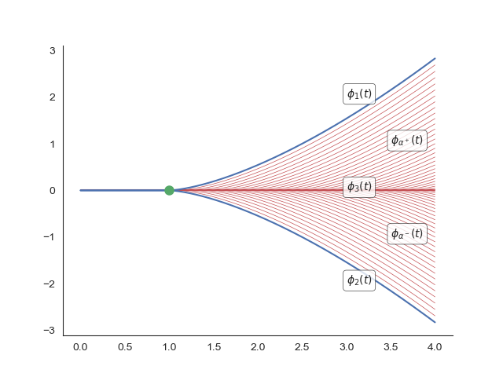
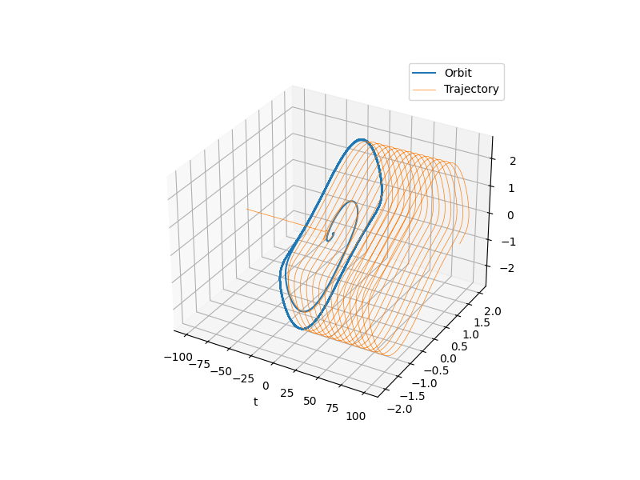
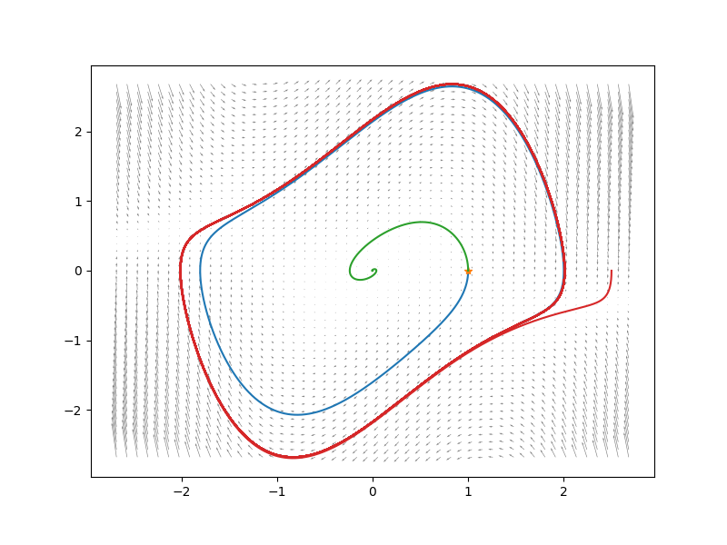
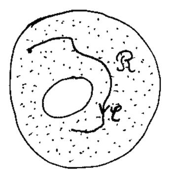
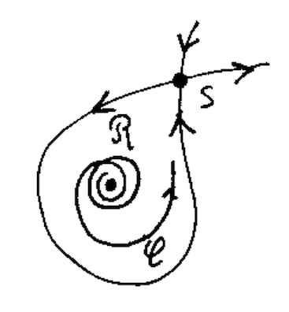
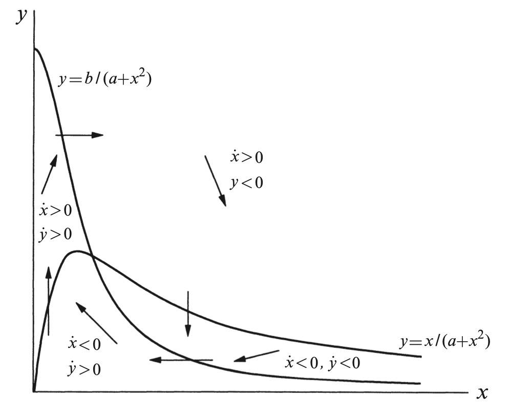
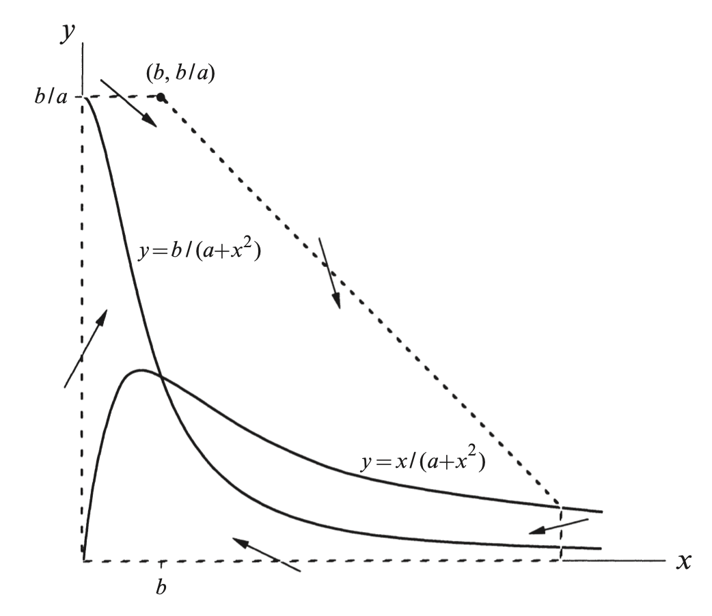
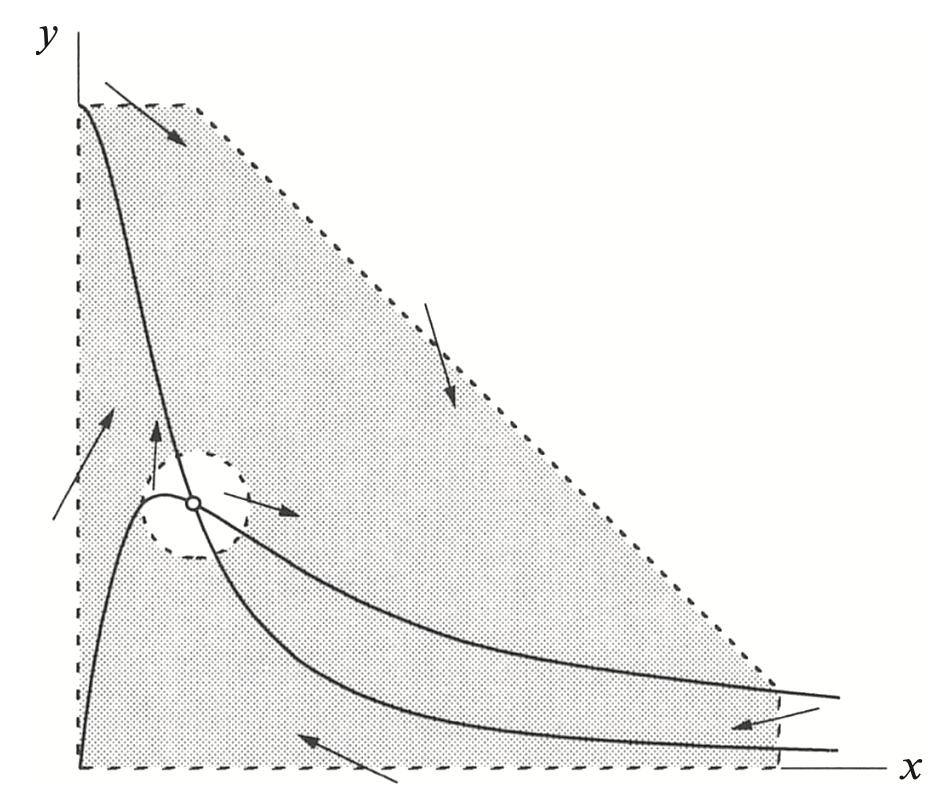
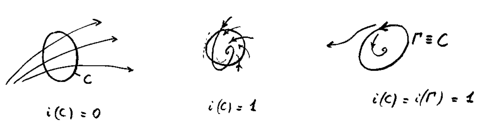
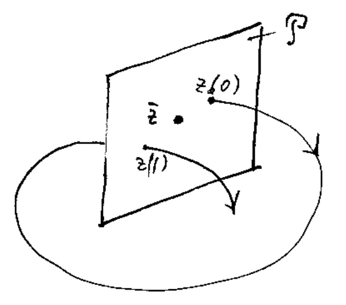

flowchart LR
id1[(Physical world)] ---|Approximation| id2[(Mathematical model)] ---|Approximation| id3[(Numerical model)]
Appendix A — Introduction to ODEs
A.1 Basic definitions
Let us start with some simple definitions about Ordinary Differential Equations (ODEs).
Definition A.1 (ODE) An scalar ODE is an equation (generally nonlinear) involving a function \(y(t)\) and its derivatives. Let \(f\colon D\to\mathbb{R}\), \(D\subseteq\mathbb{R}^{n+1}\) open set not empty. Then an ODE of order \(n\) is an equation of the type: \[y^{(n)} = f(t,y,y',\ldots,y^{(n-1)}).\]
Let’s have a look to some of the equations we are going to deal with during this course. We will analyze the equations for a purely mathematical point of view, with no biological insights: this will come later.
Example: Malthusian growth model
\[N'(t) = r\,N(t).\]
This is a simple model of population growth where \(N(t)\) represents the population size at time \(t\). We have that \(f(t,N) = rN\). It is a linear ODE (\(f\) is linear with respect to \(N\)), with constant coefficients (\(r\) is a constant), first-order, and autonomous (\(f\) does not explictly depend on \(t\)).
Example: Logistic Growth Model
\[ N'(t) = r N\left(1 - \frac{N}{K}\right) \] The logistic model modifies the Malthusian growth by introducing a carrying capacity. We have that \(f(t,N) = rN(1-N/K)\). It is a nonlinear ODE (\(f\) is non-linear with respect to \(N\)), first-order, and autonomous.
Example: Damped Harmonic Oscillator
\[ y''(t) + 2\beta y'(t) + \omega_0^2 y(t) = F(t). \] This is a second-order ODE, linear, constant coefficients, non-autonomous (because of the presence of \(F(t)\)).
In general, an ODE does not tell anything about a specific solution; it is just the law of motion. We can have many solutions. As a rule of thumb, an \(n\)-order scalar ODE requires \(n\) constants for uniquely defining a solution. An Initial Value Problem (IVP) is an ODE supplemented wuth additional conditions. It is called “initial condition” because it sets the value of the solution at some initial time \(t_0\). (Please note that an IVP is also called “Cauchy problem” on some books.)
Definition A.2 (Initial Value Problem) An initial value problem (IVP) is a system of the form: \[ \left\{\begin{aligned} y^{(n)} &= f(t,y,y',\ldots,y^{(n-1)}), &\\ y(t_0) &= y_0, \\ y'(t_0) &= y_1, \\ &\vdots \\ y^{(n-1)}(t_0) &= y_{n-1}. \\ \end{aligned}\right. \]
In all the above cases, the ODEs were scalar. A system of ODEs is the natural generalization to \(\mathbb{R}^n\). We will only consider first-order system of ODEs, because their extension to higher-order ODEs is superfluous (we will see why in a moment.)
Consider the system of first-order ODEs: \[ \left\{\begin{aligned} y_1' &= f_1(t,y_1,y_2,\ldots,y_n), \\ y_2' &= f_2(t,y_1,y_2,\ldots,y_n), \\ & \cdots \\ y_n' &= f_n(t,y_1,y_2,\ldots,y_n). \\ \end{aligned}\right. \]
We set \(\boldsymbol{y}(t) = (y_1,\ldots,y_n)^\intercal\) and \(\boldsymbol{f}(t,\boldsymbol{y})=(f_1,\ldots,f_n)^\intercal\) so the system rewrites to \[ \boldsymbol{y}' = \boldsymbol{f}(t,\mathbf{y}). \]
(Please note that the time derivative of the vector is the vector of the derivatives.) In compact form, the IVP reads as: \[ \left\{\begin{aligned} \boldsymbol{y}' = \boldsymbol{f}(t,\mathbf{y}), \\ \boldsymbol{y}(t_0) = \boldsymbol{y}_0. \\ \end{aligned}\right. \tag{A.1}\]
The solution \(\boldsymbol{\phi}\in\mathcal{C}^1(I,\mathbb{R}^n)\) of the system is a curve in \(\mathbb{R}^n\) such that: \[ \boldsymbol{\phi}'(t) = \boldsymbol{f}(t,\boldsymbol{\phi}(t)),\quad\text{for all $t\in I$}. \]
A.2 Separation of variables
Solving ODE analytically is not always possible. As for integration, sometimes we cannot find a solution in closed form. However, we have alternatives to rescue us:
- Qualitative analysis: we don’t solve the ODE explicitly, we rather analyse the behaviour of the trajectories as we would do for a function study. Very often we proceed graphically (in 1-D and 2-D). It is very helpful for parametric studies.
- Numerical integration: we solve the IVP on a computer. We have no limits, but we always need to provide all parameters and initial values. Parametric studies are more difficult.
A combination of the above approaches in always wise. On the other hand, it is good to know how to integrate an ODE when it is possible.
A simple yet effective technique to solve IVPs is the method of separation of variables. It applies to IVPs of the form: \[ \begin{cases} y' = f(t)g(y), \\ y'(t_0) = y_0. \end{cases} \]
for some functions \(f\) and \(g\). Using the Leibniz notation, we write the ODE as follows: \[ \newcommand{\dd}{\mathrm{d}} \frac{\dd y}{\dd t} = f(t)g(y), \]
which suggests to separate the variables \(t\) and \(y\): \[ \newcommand{\dd}{\mathrm{d}} \frac{\dd y}{g(y)} = f(t)\,\dd t. \]
Here we consider \(y\) and \(t\) as independent variables. The advantage is that we can integrate both sides to get rid of differentials: \[ \newcommand{\dd}{\mathrm{d}} \int_{y_0}^y \frac{\dd \tilde y}{g(\tilde y)} = \int_{t_0}^t f(\tilde t)\,\dd \tilde t. \]
Please note that amongst all anti-derivatives, we select those satisfying the initial condition \(y(t_0)=y_0\). Suppose that \(F(t)\) and \(G(y)\) are respectively anti-derivatives of \(f(t)\) and \(\frac{1}{g(y)}\), i.e. \(F'(t)=f(t)\) and \(G'(y)=\frac{1}{g(y)}\). Then, according to the Fundamental Theorem of Calculus, we have: \[ G(y) - G(y_0) = F(t) - F(t_0), \]
which gives an implicit expression for \(y(t)\): \[ G\bigl(y(t)\bigr) = F(t) + G(y_0) - F(t_0). \]
Please note that the expression on the right hand side only contains the variable \(t\). When \(G\) is invertible, the expression of \(y(t)\) can be made explicit.
Example (Malthusian growth model)
We aim at solving the following IVP: \[ \begin{cases} N' = r N, \\ N(t_0) = N_0. \end{cases} \tag{A.2}\]
We apply the method of separation of variables. We have: \[ \newcommand{\dd}{\mathrm{d}} \int_{N_0}^N \frac{\dd\tilde N}{\tilde N} = \int_{t_0}^t r\,\dd\tilde{t}. \]
After integration (recall that \(\ln'(y) = 1/y\)): \[ \ln\Bigl(\tfrac{N}{N_0}\Bigr) = r (t-t_0), \]
or, by inverting the logarithm, \[ N(t) = N_0 e^{r (t-t_0)}. \]
Exercise (Time-dependent Malthus equation)
Check that \(N(t) = N_0 e^{r (t-t_0)}\) solves the problem (Equation A.2).
A.3 Well-posedness
Let us recall this (simplistic) view of mathematical modeling:
A good mathematical model shall approximate well the physical world. For instance, it is able to fit experimental data in a validation test. However, a validation test requires that we are able to solve the mathematical problem. For that, we require that the problem should satisfy well-posedness properties.
We are dealing with IVPs. Here, well-posedness translates into:
Existence of a solution \(\boldsymbol{\phi} \in \mathcal{C}^1([0,T],\mathbb{R}^n)\) for every choice of the initial data;
Uniqueness of the solution, in the sense that if \(\boldsymbol{\phi}_1(t)\) and \(\boldsymbol{\phi}_2(t)\) are both solutions of the IVP for the same initial data, then \(\boldsymbol{\phi}_1(t)=\boldsymbol{\phi}_2(t)\) for all \(t\).
Stability of the solution to perturbations, that is if \(\tilde{\boldsymbol{\phi}}(t)\) is the solution of the IVP with some perturbation, e.g., applied to the initial datum or to the right hand side, then \(\|\tilde{\boldsymbol{\phi}}-\boldsymbol{\phi}\|\to 0\) as the perturbation goes to zero.
For IVPs, stability to perturbation is also called zero stability. The zero stability for initial data follows from the Cauchy-Lipschitz theorem, as shown below.
For the numerical realm, we have a similar definition of well-posedness. Additionally, we typically need to show that the numerical solution converges (in some sense) to the analytical solution. That is, the approximation error goes to zero as we refine the numerical problem. For an IVP, convergence means that that the error between the numerical solution and the true solution goes to zero as the time step goes to zero.
We start with a definition of a solution for the IVP.
Definition A.3 (Classic solution) A classic solution of the IVP (Equation A.1) is a function \(\boldsymbol{\phi}\in\mathcal{C}^1(I;\mathbb{R}^n)\), where \(I\subset\mathbb{R}\) is a closed interval, such that
- \(\boldsymbol{\phi}'(t) = \boldsymbol{f}(t,\boldsymbol{\phi}(t))\) for all \(t\in I\);
- \(\boldsymbol{\phi}(t_0) = \boldsymbol{y}_0\);
- \((t,\boldsymbol{\phi}(t))\subset D\) for all \(t\in I\), where \(D\subset\mathbb{R}^{n+1}\) is the domain of \(\boldsymbol{f}\).
The first 2 conditions are simply the IVP (equation and initial condition). The third condition concern the domain of definition of the right hand side of the ODE.
Example (lack of existence)
When the \(\boldsymbol{f}\) is not continuous, we cannot expect existence in general. In fact, consider the IVP \[ \begin{cases} y' = \mathcal{H}(t) = \begin{cases} 0, & t\le 0,\\ 1, & t > 0,\end{cases} \\ y(0) = y_0. \end{cases} \]
A possible and intuitive solution is \[ \phi(t) = y_0 + \max\{0, t\} = \begin{cases} y_0, & t\le 0,\\ y_0 + t, & t>0.\end{cases} \]
The function \(\phi(t)\) is, however, not \(\mathcal{C}^1(I)\) for any neighborhood \(I\) of the initial time \(t_0=0\). Therefore, the function cannot be a solution, at least according to the above definition of solution. Note that with a different initial condition, say \(y(1) = y_0\), we can find a \(\mathcal{C}^1(I)\) solution, for \(I\) away from \(t=0\).
A.3.1 Local well-posedness
A general result for the local existence of a solution is due to Giuseppe Peano:
Theorem A.1 (Peano) Let \(\mathbf{f}\colon D \to\mathbb{R}^n\), \(D\subseteq\mathbb{R}^{n+1}\) open set, be continuous. Then, for all \((t_0,\mathbf{y}_0)\in D\), there exists a neighborhood of \(t_0\), denoted by \(I_\delta = [t_0-\delta,t_0+\delta]\) with \(\delta > 0\), on which is possible to construct a solution \(\boldsymbol{\phi}\in\mathcal{C}^1( I_\delta; \mathbb{R}^n)\) to the IVP.
Peano’s theorem ensures the existence but not the uniqueness. He also provided a simple counterexample to uniqueness.
Peano’s counterexample on uniqueness
Consider the ODE \[ \begin{cases} y' = \sqrt[3]{y}, \\ y(1) = 0. \end{cases} \]
The function \(f(t,y) = \sqrt[3]{y}\) is continuous with respect to \(t\) and \(y\) (note that it does not explicitly depends on time), thus Peano’s Theorem ensures the existence of at least one solution.
We can find a solution by separation of variables. We have (please check!): \[ \phi_1(t) = \begin{cases} \bigl(\tfrac{2}{3} (t-1)\bigr)^{3/2}, & t \ge 1, \\ 0, & t < 1. \end{cases} \]
This solution is however not the only one. Also the following function is a solution (again, please check!) \[ \phi_2(t) = \begin{cases} -\bigl(\tfrac{2}{3} (t-1)\bigr)^{3/2}, & t \ge 1, \\ 0, & t < 1. \end{cases} \]
Yet another solution is \(\phi_3(t)\equiv 0\). Actually, the IVP is so subtle that we can build an infinite number of solutions with the power of continuum! In fact, for any \(\alpha\ge 1\), we have that \[ \phi_{\alpha^\pm}(t) = \begin{cases} \pm\bigl(\tfrac{2}{3} (t-\alpha)\bigr)^{3/2}, & t \ge \alpha, \\ 0, & t < \alpha, \end{cases} \]
are all solutions of the IVP. That’s a lot to deal with.

The example shows that the lack of uniqueness is somehow related to a lack of stability of the solution. Consider a particle located, at \(t=1\), in \(y=0\). The velocity at some generic time \(t\) is \(y'(t) = \sqrt[3]{y(t)}\). Then, the trajectory of the particle is exactly the solution of Peano’s example.
The example shows that we need some control on the growth rate of \(\boldsymbol{f}\). The correct concept is the Lipschitz continuity:
Definition A.4 (Lipschitz continuity) Let \(\boldsymbol{f}\colon \Omega \to \mathbb{R}^n\), \(\Omega\subseteq\mathbb{R}^n\), a continuous function. We say that \(\boldsymbol{f}\) is Lipschitz continuous if there exists a constant \(L>0\) such that \[ \| \boldsymbol{f}(\boldsymbol{y}) - \boldsymbol{f}(\boldsymbol{z}) \| \le L\|\boldsymbol{y}-\boldsymbol{z}\|, \]
for all \(\boldsymbol{y},\boldsymbol{z}\in\Omega\).
Definition A.5 (Local Lipschitz continuity) Let \(\mathbf{f}\colon \Omega \to \mathbb{R}^n\) a continuous function, with \(\Omega\subseteq\mathbb{R}^n\) open domain. We say that \(\boldsymbol{f}\) is locally Lipschitz continuous in \(\Omega\) if for every \(\boldsymbol{y}_0\in\Omega\) there exists a neighborhood of \(\boldsymbol{y}_0\) in which \(\boldsymbol{f}\) is Lipschitz continuous, with a constant \(L\) possibly depending on the neighborhood.
Exercise
Show that \(\mathcal{C}^1\) functions are always locally Lipchitz. For simplicity consider functions on \(\mathbb{R}\).
Theorem A.2 (Cauchy-Lipschitz) Let \(\boldsymbol{f}\in\mathcal{C}(D;\mathbb{R}^n)\), \(D\subseteq\mathbb{R}^{n+1}\) open domain. If \(\boldsymbol{f}\) is locally Lipschitz in \(D\), with respect to \(\boldsymbol{y}\) and uniformly in \(t\), then for every \((t_0,\boldsymbol{y}_0)\in D\) there exists an interval \(I_\delta = [t_0-\delta,t_0+\delta]\), with \(\delta>0\), on which is possible to construct a solution \(\boldsymbol{\phi}\in\mathcal{C}^1( I_\delta; \mathbb{R}^n)\) to the IVP (Equation A.1). Such solution is also unique, in the sense that every other solution of the IVP coincides with \(\boldsymbol{\phi}(t)\) on \(I_\delta\).
The Cauchy-Lipschitz theorem has very important consequences on the study of ODEs. We mention here the following
Corollary A.1 (Zero stability) Consider the following IVPs: \[ \left\{\begin{aligned} \boldsymbol{y}' &= \boldsymbol{f}(t,\mathbf{y}), \\ \boldsymbol{y}(t_0) &= \boldsymbol{y}_0, \\ \end{aligned}\right. \quad\text{and}\quad \left\{\begin{aligned} \tilde{\boldsymbol{y}}' &= \boldsymbol{f}(t,\tilde{\mathbf{y}}), \\ \tilde{\boldsymbol{y}}(\tilde{t}_0) &= \tilde{\boldsymbol{y}}_0. \\ \end{aligned}\right. \]
Suppose we are under the hypotheses of the Cauchy-Lipschitz theorem. Then, we have the following stability estimate: \[ \| \tilde{\boldsymbol{y}}(t) - \boldsymbol{y}(t) \| \le M |\tilde{t}_0 - t_0| + e^{L|t-t_0|} \| \tilde{\boldsymbol{y}}_0 - \boldsymbol{y}_0 \|, \] where \(L\) is the Lipschitz constant of \(\boldsymbol{f}\).
In other words, if we perturb the initial value of the IVP, the perturbed solution remains close to the unperturbed solution as long as the perturbation is small and small time. For large time, however, the initial perturbation may grow exponentially, with a rate proportional to the Lipschitz constant.
A.3.2 Global well-posedness
The solution provided by the Cauchy-Lipschitz Theorem is only defined in a local interval, that is up to \(t=t_0+\delta\), with \(\delta > 0\). Unfortunately, \(\delta\) can be small, thus there is no guarantee that we can integrate the IVP for an arbitrarily long time.
We can try to circumvent the problem as follows. Let us call \(\boldsymbol{\phi}_1(t)\) the solution and \(\delta_1 = \delta\). Now we set up a new problem of the form: \[ \begin{cases} \boldsymbol{y}' = \boldsymbol{f}(t,\boldsymbol{y}), & \\ \boldsymbol{y}(t_1) = \boldsymbol{y}_1, & \\ \end{cases} \]
where \(t_1 = t_0 + \delta_1\) and \(\boldsymbol{y}_1 = \boldsymbol{\phi}_1(t_1)\). Since also the above problem is well-posed, we get a new solution \(\boldsymbol{\phi}_2(t)\) up to \(t_2=t_1+\delta_2\), for some \(\delta_2>0\).
So, we can define a new solution on the interval \([t_0,t_0 + \delta_1+\delta_2]\) by gluing the solutions around \(t_1\): \[ \boldsymbol{\phi}(t) = \begin{cases} \boldsymbol{\phi}_1(t), & t \in [t_0,t_0+\delta_1], \\ \boldsymbol{\phi}_2(t), & t \in [t_0+\delta_1,t_0+\delta_1+\delta_2]. \end{cases} \]
Please note that \(\boldsymbol{\phi}_1(t_1)=\boldsymbol{\phi}_2(t_1)\) by construction, and the same applies to the derivative, so the full solution is still \(\mathcal{C}^1([t_0, t_0+\delta_1+\delta_2])\).
By iterating the process, we obtain a sequence \(\{ \delta_n \}\) of extensions. The hope is that \(\sum_n \delta_n \to \infty\), that is we can extend the solution indefinitely. However, it is certainly possible that \(t_0 + \sum_n \delta_n \to T_\text{max} < \infty\).
Definition A.6 (Maximal interval) The maximal right interval \([t_0,T_\text{max})\) is simply the maximum time \(T_\text{max}\) up to which we can extend the solution to the right. In general the interval is open. Similarly, the left maximal interval is \((T_\text{min},t_0]\). Finally, the maximal interval is just \((T_\text{min},T_\text{max})\). We denote the maximal interval of the solution with \(J_\phi\).
Example (blow-up of solutions)
Consider the problem \[ \begin{cases} y' = y^2, \\ y(0) = 1.\end{cases} \]
We solve it by separation of variables. So, \[ \begin{aligned} & \int_1^y \frac{\mathrm{d}\tilde{y}}{\tilde{y}^2} = \int_0^t \mathrm{d}\tilde{t} \\ \Rightarrow\; & \left[ -\frac{1}{\tilde{y}} \right]_1^y = t \\ \Rightarrow\; & -\frac{1}{y} + 1 = t \\ \Rightarrow\; & y(t) = \frac{1}{1-t}. \end{aligned} \]
We know that the problem is locally well-posed, because \(f(t,y) = y^2\) is continuous and locally Lipschitz. Thus, the above solution is locally unique. However, the interval of integration cannot be arbitrarily large: starting at \(t=0\), we can go forward in time only up to \(t=1-\varepsilon\), with \(\varepsilon > 0\). That is, we cannot reach \(t=1\). The reason is clear: the solution exhibit a vertical asymptote at \(t=1\), thus the solution blows up. In mathematics, this event is indeed called blow-up in finite time of the solution.
Conversely, backward integration exhibit no problem. Therefore, the maximal interval of well-posedness is \(J_\phi = (-\infty,1)\).
Computing the maximal interval for a solution by hand is clearly not practical. We would like to estimate the interval without having to solve the problem analytically.
Theorem A.3 Let \(\|\boldsymbol{\phi}(t)\|\le M\) for all \(t\in(a,b)\). Then \(J_\phi=(a,b)\).
In the theorem, we can also take \(a=-\infty\) and \(b=+\infty\). In this case the maximal interval would be \(\mathbb{R}\).
If the right hand side of the IVP grows almost linearly, then we have global existence as well. Indeed, the following theorem holds.
Theorem A.4 Let \(\boldsymbol{f}\colon (a,b)\times\mathbb{R}^n\to\mathbb{R}^n\). Suppose we are under the assumptions of the Cauchy-Lipschitz theorem. If there exist 2 non-negative constants \(k_1\), \(k_2\) such that
\[ \| \boldsymbol{f}(t,\boldsymbol{y}) \| \le k_1 + k_2 \| \boldsymbol{y} \| \]
for every \((t,\boldsymbol{y})\in [a,b] \times \mathbb{R}^n\), then for all \((t_0,\boldsymbol{y}_0)\) the unique solution \(\boldsymbol{\phi}(t)\) is defined in \([a,b]\).
In general, we use a priori information on the solution to apply the above Theorems. For that, we may use energy estimates (common for problems in physics), or we can study the qualitative behavior of the solutions for various initial conditions, e.g., in the phase space. Let us try that with a simple example.
Example (logistic equation)
Consider the ODE \[ y' = y(1-y), \]
where \(y(t)\) may represent, for instance, the density of a population. We would like to show that \(J = \mathbb{R}\) for every choice of the initial data \(y(0)=y_0\). Note that the right hand side \(f(t,y)=y(1-y)\) is quadratic: we cannot exclude a blow up as in the above example!
We have the following cases:
if \(y_0 = 0\) or \(y_0 = 1\), the solution is constant in time, \(y(t)=y_0\). In fact, \(f(t,y_0) = 0\), thus \(y'(t)=0\) and we have a constant solution. We are going to call this type of solutions fixed points or equilibria (see the next section.)
if \(y_0 \in (0,1)\), then \(y(t) \to 1^-\) as \(t\to+\infty\) and \(y(t) \to 0^+\) as \(t\to-\infty\). Thus, \(y(t)\in(0,1)\) for all \(t\). The limit follows from an analysis of the sign of \(f(t,y)\). For \(y\in(0,1)\), \(f(t,y) > 0\), thus \(y' > 0\) for all \(t\) and \(y(t)\) is monotonically increasing. But \(y = 1\) is an equilibrium that cannot be crossed, and there are no other equilibria in \((0,1)\). Thus, it must be that \(y\to 1\) from below as \(t\to\infty\).
if \(y_0 > 1\), then \(y(t)\to 1^+\) as \(t\to+\infty\). Again, the statement follows from \(f(t,y)<0\) for \(y > 1\), thus \(y'<0\) and \(y(t)\) is monotonically decreasing. Since it is bounded from below by \(y(t)=1\), we have \(y(t)\to 1\). However, for \(t\to-\infty\) we have a blow up in finite time, specifically for \(t = \bar{t} < 0\) where (show this by explicit integration of the IVP!) \[ \bar{t} = \ln(1-y_0) - \ln(y_0). \]
We conclude that the solution \(y(t)\) is bounded in \([y_0,0]\) for any choice of the initial condition \(y_0 \ge 0\) and \(t\ge 0\). (Why we exclude \(y_0 <0?\)) Thus, we can apply the above theorem with \(a=0\) and \(b=\infty\), concluding that \(J = (0,\infty)\). For \(t < 0\), the solution is bounded for \(y_0 \in [0,1]\), thus \(J = \mathbb{R}\). However, for \(y_0 > 1\), we have \(J = (\bar{t},\infty)\).
A.4 Linear ODEs
A general linear ODE is an equation of the form: \[ \mathbf{y}' = \mathbf{A}(t)\mathbf{y} + \mathbf{b}(t) \]
with \[ \mathbf{y} = \begin{pmatrix} y_1 \\ y_2 \\ \vdots \\ y_n \end{pmatrix},\quad \mathbf{A}(t) = \begin{pmatrix} 0 & 1 & 0 & \cdots & 0 \\ 0 & 0 & 1 & \cdots & 0 \\ \vdots & \vdots & \ddots & \ddots & \vdots \\ 0 & 0 & \cdots & 0 & 1 \\ a_n(t) & a_{n-1}(t) & \cdots & a_2(t) & a_1(t) \end{pmatrix},\quad \mathbf{b}(t) = \begin{pmatrix} 0 \\ 0 \\ \vdots \\ b(t) \end{pmatrix}. \]
Note that \(\mathbf{f}(t,\mathbf{y}) = \mathbf{A}(t)\mathbf{y} + \mathbf{b}(t)\) is only linear in \(\mathbf{y}\), that is \[ \mathbf{f}(t,\alpha\mathbf{y}+\mathbf{z}) = \alpha \mathbf{f}(t,\mathbf{y}) + \mathbf{f}(t,\mathbf{z}), \]
for all choices of \(\alpha\in\mathbb{R}\) and \(\mathbf{y}, \mathbf{z}\in\mathbb{R}^n\).
A.4.1 Well-posedness
Theorem A.5 Assuming that \(\mathbf{A} \in \mathcal{C}^0([\alpha,\beta];\mathbb{R}^{n\times n})\) and \(\mathbf{b}\in \mathcal{C}^0([\alpha,\beta];\mathbb{R}^n)\), that is all coefficients are continuous function of \(t\in[\alpha,\beta]\), then we have a unique global solution \(\boldsymbol{\phi}\in\mathcal{C}^1((\alpha,\beta);\mathbb{R}^n)\) for each choice of the initial data.
The proof of the local well-posedness follows for the Cauchy-Lipschitz theorem, because \(\mathbf{f}(t,\mathbf{y})\) is locally Lipschitz uniformly in \(t\). In fact, since \(\mathbf{A}(t)\) is continous on a closed interval, it is also bounded. Thus: \[ \| \mathbf{f}(t,\mathbf{y}) - \mathbf{f}(t,\mathbf{z}) \| = \| \mathbf{A}(t) (\mathbf{y}-\mathbf{z}) \| \le \| \mathbf{A}(t) \| \| \mathbf{y}-\mathbf{z} \| \le \underbrace{\max_{t\in[\alpha,\beta]}\| \mathbf{A}(t) \|}_{L} \| \mathbf{y}-\mathbf{z} \|. \]
The global existence follows from Theorem A.4. \[ \| \mathbf{f}(t,\mathbf{y}) \| = \| \mathbf{A}(t)\mathbf{y} + \mathbf{b}(t) \| \le \| \mathbf{A}(t)\| \|\mathbf{y}\| + \| \mathbf{b}(t) \| \le \underbrace{\max_{t\in[\alpha,\beta]}\| \mathbf{A}(t) \|}_{k_1} \|\mathbf{y}\| + \underbrace{\max_{t\in[\alpha,\beta]}\| \mathbf{b}(t) \|}_{k_2}. \]
A.4.2 Solution of the homogeneous problem
An interesting aspect of linear ODEs is that we can represent explicitly all the solutions of the ODE. Obviously, a linear IVP has a unique solution. The ODE, on the other hand, can have many solutions. We start with the homogeneous problem: \[ \mathbf{y}' = \mathbf{A}(t)\mathbf{y}. \]
Theorem A.6 Let \(\mathcal{U} = \bigl\{ \boldsymbol{\phi} \in \mathcal{C}^1((\alpha,\beta);\mathbb{R}^n) : \boldsymbol{\phi}'(t) = \mathbf{A}(t)\boldsymbol{\phi}(t) \: \forall t\in(\alpha,\beta) \bigr\}\) be the set of solutions of the linear ODE. Then \(\dim\mathcal{U} = n\).
Therefore, there exists a basis \(\{\boldsymbol{\phi}_1(t),\ldots,\boldsymbol{\phi}_n(t)\}\) of \(\mathcal{U}\) such that each solution \(\boldsymbol{\phi}(t) \in \mathcal{U}\) reads as follows: \[ \boldsymbol{\phi}(t) = \sum_{i=1}^n c_i \boldsymbol{\phi}_i(t), \]
for some choice of \(\mathbf{c} = [c_1, \ldots, c_n]^T \in \mathbb{R}^n\).
Definition A.7 (Wronskian matrix) We define the Wronskian matrix \(\mathbf{W}(t)\) as the column-matrix of the basis of \(\mathcal{U}\):
\[ \mathbf{W}(t)=\Bigl[\begin{matrix} & \boldsymbol\phi_1(t) &|& \boldsymbol\phi_2(t) &|& \cdots &|& \boldsymbol\phi_n(t) & \end{matrix}\Bigr]. \]
Note that from its definition it follows that: \[ \mathbf{W}(t)' = \mathbf{A}(t)\mathbf{W}(t). \]
The general solution of the linear ODE is: \[ \boldsymbol{\phi}(t) = \mathbf{W}(t)\mathbf{c}, \]
for some \(\mathbf{c}\in\mathbb{R}^n\). For an IVP with initial condition \(\mathbf{y}(t_0)=\mathbf{y}_0\), we have that: \[ \boldsymbol{\phi}(t_0) = \mathbf{W}(t_0)\mathbf{c} = \mathbf{y}_0, \quad\Rightarrow\quad \mathbf{c} = \mathbf{W}^{-1}(t_0)\mathbf{y}_0, \]
thus the unique solution is: \[ \boldsymbol{\phi}(t) = \mathbf{W}(t)\mathbf{c} = \mathbf{W}(t)\mathbf{W}^{-1}(t_0)\mathbf{y}_0 = \mathbf{W}(t,t_0)\mathbf{y}_0, \]
where \(\mathbf{W}(t,t_0)\) is called transition matrix. The transition matrix bears this name because it transfers the initial condition \(\mathbf y_0\) at time \(t_0\) to the solution at time \(t\). It is a particular case of flow of an ODE. We have the following very useful properties, all straightforward to prove using the definition above:
- \(\mathbf W(t_0,t_0) = \mathbf I\),
- \(\mathbf W(t,s)\mathbf W(s,t_0) = \mathbf W(t,t_0)\),
- \((\mathbf W(t,t_0))^{-1}=\mathbf W(t_0,t)\).
Note that we haven’t proved the invertibility of \(\mathbf{W}(t_0)\). We are going to do it later for the case of \(\mathbf{A}\) with constant coefficients.
Exercise
Prove the properties of the transfer matrix.
A.4.3 Solution of the general problem
The general solution is useful for building a particular solution for the non-homogeneous problem \[ \mathbf{y}' = \mathbf{A}(t)\mathbf{y} + \mathbf{b}(t). \tag{A.3}\]
Starting from the solution \(\boldsymbol{\phi}(t) = \mathbf{W}(t)\mathbf{c}\), we can apply the method of variation of constants to find a solution of the form \(\boldsymbol{\phi}(t) = \mathbf{W}(t)\mathbf{c}(t)\), for some choice of \(\mathbf{c}(t)\). It turns out that the particular solution is: \[ \boldsymbol\phi(t) = \mathbf{W}(t) \int^t \mathbf{W}^{-1}(s)\mathbf b(s) \mathrm{d}s = \int^t \mathbf{W}(t,s)\mathbf b(s) \mathrm{d}s. \]
Supplemented with an initial condition \(\mathbf{y}(t_0)=\mathbf{y}_0\), the solution of the IVP is \[ \boldsymbol\phi(t) = \mathbf{W}(t,t_0)\mathbf{y}_0 + \int_{t_0}^t \mathbf{W}(t,s)\mathbf{b}(s) \mathrm{d}s. \tag{A.4}\]
Exercise
Show that (Equation A.4) is the solution of the IVP (Equation A.3).
A.4.4 Matrix exponential
We focus now on the following case: \[\begin{cases} \mathbf y'=\mathbf A\mathbf y + \mathbf b(t), & \\ \mathbf y(t_0)=\mathbf y_0. & \end{cases}\]
We need the Wronskian matrix. For computing it, we use the fact that \(\mathbf{W}' = \mathbf{A}\mathbf{W}\) and \(\mathbf{W}(0)=\mathbf{I}\) (identity matrix). Formally, notice that \[ \begin{aligned} \mathbf{W}(0) &= \mathbf{I}, \\ \mathbf{W}'(0) &= \mathbf{A}\mathbf{W} = \mathbf{A}, \\ \mathbf{W}''(0) &= \mathbf{A}\mathbf{W}' = \mathbf{A}^2, \\ &\cdots \\ \mathbf{W}^{(k)}(0) &= \mathbf{A}^n. \end{aligned} \]
Thus we can construct the solution as a Taylor expansion: \[ \mathbf{W}(t) = \sum_{n=0}^\infty \frac{\mathbf{W}^{(n)}(0)}{n!} t^k = \sum_{n=0}^\infty \frac{\mathbf{A}^n}{n!} t^k = \mathbf{I} + t\mathbf{A} + \frac{t^2}{2} \mathbf{A}^2 + \ldots \]
Definition A.8 (Matrix exponential) We define the matrix exponential as: \[ e^{\mathbf{A}} := \sum_{n=0}^\infty \frac{\mathbf{A}^n(t)}{n!}. \]
Thus, the Wronskian is: \[ \mathbf{W}(t) = e^{t\mathbf{A}}. \]
The series converges for each \(\mathbf{A}\in\mathbb{R}^{n\times n}\). Below some useful properties:
If \(\mathbf A = \operatorname{diag}\{ a_1, \dots, a_n \}\), then \(e^{\mathbf A} = \operatorname{diag}\{ e^{a_1}, \dots, e^{a_n} \}\). The matrix exponential of diagonal matrices is then straightforward to compute. The proof is simple: just plug the diagonal matrix in the definition and note that \(\mathbf A^k = \operatorname{diag}\{ a_1^k, \dots, a_n^k \}\). Hence: \[\sum_{k=0}^\infty \frac{\mathbf{A}^k}{k!} = \operatorname{diag}\biggl\{ \sum_{k=0}^\infty \frac{a_1^k}{k!}, \ldots, \sum_{k=0}^\infty \frac{a_n^k}{k!} \biggr\} = \operatorname{diag}\{ e^{a_1}, \dots, e^{a_n} \}.\]
\(e^{\mathbf 0} = \mathbf{I}\). If \(\mathbf A\) is the matrix with all zero entries \(\mathbf{0}\), then the matrix exponential is the identity matrix \(\mathbf{I}\). This is trivial because all the entries of the sum are zero except for \(k=0\).
\(\det(e^{\mathbf A})=e^{\operatorname{tr}\mathbf A}\). This is reminescent of the Wronskian (determinant of Wronskian matrix), and the proof is similar, based on the Taylor expansion \(|\mathbf I + \varepsilon\mathbf A| = 1+\varepsilon\operatorname{tr}\mathbf A + \mathcal{O}(\varepsilon^2)\). We use the alternative definition of matrix exponential, and the fact that the determinant is a continuous function with respect to the coefficients of the matrix: \[\begin{aligned} |e^{\mathbf A}| &= \biggl| \lim_{n\to\infty} \Bigl(\mathbf I + \tfrac{1}{n}\mathbf A \Bigr)^n \biggr| \\ \text{\small(continuity)} &= \lim_{n\to\infty} \biggl| \Bigl( \mathbf I + \tfrac{1}{n}\mathbf A \Bigr)^n \biggr| \\ \text{\small(det of product)} &= \lim_{n\to\infty} \Bigl| \mathbf I + \tfrac{1}{n}\mathbf A \Bigr|^n \\ \text{\small(det expansion)} &= \lim_{n\to\infty} \Bigl( 1 + \tfrac{1}{n}\operatorname{tr}\mathbf A + \mathcal{O}(\tfrac{1}{n^2}) \Bigr)^n = e^{\operatorname{tr}\mathbf A}. \end{aligned}\]
\(e^{\mathbf A}\) is invertible. This is a consequence of the previous property, since the determinant is always strictly positive.
If \(\mathbf{A}\) and \(\mathbf{B}\) commute, that is \(\mathbf{A}\mathbf{B} = \mathbf{B}\mathbf{A}\), then \(e^{\mathbf{A}+\mathbf{B}}=e^{\mathbf{A}} e^{\mathbf{B}}\). We are not proving this fact.
\(e^{0\mathbf A}=\mathbf{I}\). This follows immediately from property 2. of the matrix exponential.
\(e^{t \mathbf A} e^{s \mathbf A} = e^{(t+s)\mathbf A}\). In this case we could use property 5., but instead we use the formula for the product of two series and Newton’s binomial formula: \[\begin{aligned} e^{t \mathbf A} e^{s \mathbf A} &= \biggl(\sum_{k=0}^\infty \frac{t^k \mathbf A^k}{k!}\biggr) \cdot\biggl(\sum_{j=0}^\infty \frac{s^j \mathbf A^j}{j!}\biggr) \\ &= \sum_{k=0}^\infty \sum_{l=0}^k \frac{t^l \mathbf A^l}{l!} \frac{s^{k-l} \mathbf A^{k-l}}{(k-l)!} \\ &= \sum_{k=0}^\infty \frac{\mathbf A^k}{k!} \sum_{l=0}^k \frac{k!}{l!(k-l)!} t^l s^{k-l} \\ &= \sum_{k=0}^\infty \frac{(t+s)^k\mathbf A^k}{k!} = e^{(t+s)\mathbf A}. \end{aligned}\]
\(\frac{\mathrm d}{\mathrm d t} e^{t\mathbf A} = \mathbf A e^{t\mathbf A}\). It follows from the definition: \[\tfrac{\mathrm d}{\mathrm d t} e^{t\mathbf A} %= \frac{\mathrm d}{\mathrm d t} \sum_{k=0}^\infty \frac{t^k \mathbf A^k}{k!} = \sum_{k=0}^\infty \frac{\mathrm d}{\mathrm d t} \frac{t^k \mathbf A^k}{k!} = \sum_{k=1}^\infty \frac{kt^{k-1} \mathbf A^k}{k!} = \mathbf A \sum_{k=1}^\infty \frac{t^{k-1} \mathbf A^{k-1}}{(k-1)!} = \mathbf A e^{t\mathbf A}.\]
This last property in particular shows rigorously that the matrix exponential is the Wronskian matrix of the ODE \(\mathbf y' = \mathbf A\mathbf y\), while with the other properties we define the transition matrix.
A.4.5 Solution of the case with constant coefficients
The solution of \[\begin{cases} \mathbf y'=\mathbf A\mathbf y + \mathbf b(t), & \\ \mathbf y(t_0)=\mathbf y_0, & \end{cases}\]
follows now trivially from the matrix exponential. We have: \[ \boldsymbol\phi(t) = e^{(t-t_0)\mathbf{A}}\mathbf{y}_0 + \int_{t_0}^t e^{(t-s)\mathbf{A}}\mathbf{b}(s) \mathrm{d}s. \]
Example (scalar case)
When \(n = 1\), with \(\mathbf{A}=a\in\mathbb{R}\), the matrix exponential is the usual exponential function. The solution is \[ \phi(t) = e^{a(t-t_0)}y_0 + \int_{t_0}^t e^{a(t-s)}b(s) \mathrm{d}s. \]
For instance, with \(b = e^{\omega t}\), we have: \[ \int_{t_0}^t e^{a(t-s)}b(s) \mathrm{d}s = \int_{t_0}^t e^{a(t-s)}e^{\omega s} \mathrm{d}s = \frac{e^{a t} - e^{\omega t}}{a-\omega}. \]
So the solution to the problem: \[ \begin{cases} y' = ay + e^{\omega t}, & \\ y(t_0) = y_0, & \end{cases} \]
is as follows: \[ \phi(t) = e^{a(t-s)} + \frac{e^{a t} - e^{\omega t}}{a-\omega}. \]
A.5 Dynamical systems
Intuitively, a dynamical system is a state or a set of variables evolving over time according to some rule. The concept is very general. Markov chains, cellular automata and large language models are examples of dynamical systems. Roughly speaking, a dynamical system is composed by
- A state space, the set of all admissible states of the system, and
- A rule for moving from the current state to the next one.
We can associate to a system of ODEs a dynamical system. The state space (called phase space) is the subset of \(\mathbb{R}^n\) of all possible states. The update rule is the solution of the ODE (called flow). For ODEs, one is not interested in studying a specific instance (or trajectory) of the system, but rather the system as a whole, for all possible initial states.
Definition A.9 A dynamical system is well-posed autonomous ODE (autonomous means that \(\mathbf{f}\) is not an explicit function of \(t\)). Specifically, given \(\mathbf{f}\in\mathcal{C}^1(\Omega;\mathbb{R}^n)\), with \(\Omega\neq\emptyset\) an open set of \(\mathbb{R}^n\), we suppose that for every initial condition \(\mathbf{y}_0\in\mathbb{R}^n\), the IVP \[\begin{cases} \mathbf{y}' = \mathbf{f}(\mathbf{y}), \\ \mathbf{y}(0) = \mathbf{y}_0, \end{cases}\]
has a unique solution \(\boldsymbol{\phi}(t)\) defined for \(t\in[0,\infty)\), and such that \(\boldsymbol{\phi}(t)\in\Omega\) for all \(t\ge0\). We call \(\mathbf{y}' = \mathbf{f}(\mathbf{y})\) dynamical system on the phase space \(\Omega\). Succintly, the dynamical system is fully qualified by the pair \((\mathbf{f},\Omega)\).
Definition A.10 The flow of an ODE is a function \(\boldsymbol{\Phi}\colon\mathbb{R}\times\Omega\to \Omega\) such that \[ \boldsymbol{\Phi}(t,\mathbf{y}_0) = \boldsymbol{\phi}(t), \]
where \(\boldsymbol{\phi}(t)\) is the solution of the ODE with initial condition \(\mathbf{y}_0\).
For example, for a linear dynamical system \(\mathbf{y}' = \mathbf{A}\mathbf{y}\) the flow is given by the transition matrix: \[ \boldsymbol{\Phi}(t,\mathbf{y}_0) = \mathbf{W}(t,0)\mathbf{y}_0 = e^{t\mathbf{A}}\mathbf{y}_0. \]
Note. It is worth to mention that also the general, non-autonomous ODEs \(\mathbf{y}' = \mathbf{f}(t,\mathbf{y})\) in \(\mathbb{R}^n\) can be recast to the autonomous form \(\mathbf{z}' = \mathbf{g}(\mathbf{z})\) in \(\mathbb{R}^{n+1}\) by setting \[\mathbf{z}(t) = \begin{bmatrix} \tau(t) \\ \mathbf{y}(t) \end{bmatrix},\quad \mathbf{g}(\mathbf{z}) = \begin{bmatrix} 1 \\ \mathbf{f}(\tau,\mathbf{y}) \end{bmatrix},\]
in fact, \(\tau(t)=t\).
A.5.1 Orbits and trajectories
Definition A.11 For a given solution (or trajectory) \(\boldsymbol{\phi}(t)\), we consider the associated orbit \(\mathcal{O}(\boldsymbol{\phi})\) defined as follows \[\mathcal{O}(\boldsymbol{\phi}) = \bigcup_{t\ge 0} \boldsymbol{\phi}(t),\]
that is, the orbit is the “shadow” of a trajectory onto the phase space \(\Omega\).
In practice, the study of a dynamical system is not limited to a particular solution (defined by some initial condition), but rather it covers the entire domain. In some sense, there is a strong geometrical interpretation: the r.h.s. of the ODE determines a vectorial field in the phase space \(\Omega\), so that a given orbit is tangent at every point to such field.
Proposition A.1 If \(\boldsymbol{\phi}(t)\) is a trajectory of the dynamical system for all \(t\ge 0\), also \(\boldsymbol{\psi}(t) = \boldsymbol{\phi}(t+c)\) is a solution for all \(t\ge -c\), with \(c\in\mathbb{R}\).
The proposition is a simple consequence of the fact that a dynamical system is an autonomous ODE, that is it \(\mathbf{f}\) is not a function of time.
Proposition A.2 Two distinct orbits of a dynamical system either coincide or they never intersect.
This proposition is extremely important when analyzing the phase portrait of a system, because some orbits may act as “barriers” for other orbits. Please note that the statement refers to orbits, not simply to the trajectories.
To prove the proposition, suppose there are two distinct orbits associated to the trajectories \(\boldsymbol{\phi}\) and \(\boldsymbol{\psi}\), and such that \(\boldsymbol{\phi}(t_1) = \boldsymbol{\psi}(t_2)\) for some \(t_1,t_2\ge 0\). That is, the orbits intersect. Now consider the function \(\tilde{\boldsymbol{\psi}}(t) = \boldsymbol{\psi}(t+t_2-t_1)\). This function is still a solution, and \(\tilde{\boldsymbol{\psi}}(t_1) = \boldsymbol{\psi}(t_2) = \boldsymbol{\phi}(t_1)\). Thus, \(\tilde{\boldsymbol{\psi}}\) and \(\boldsymbol{\phi}\) have the same initial condition, and they must coincide for all \(t\), that is \(\tilde{\boldsymbol{\psi}}(t) = \boldsymbol{\phi}(t)\). In other words, \(\tilde{\boldsymbol{\psi}}\) and \(\boldsymbol{\phi}\) have the same orbit. But also \(\tilde{\boldsymbol{\psi}}\) and \(\boldsymbol{\psi}\) have the same orbit, because the system is autonomous. In conclusion, if two orbits intersect at a least one point, they must concide at all points.
Example (Van der Pol)
Below an example of the phase space for the equation \(y'' - \mu(1-y^2)y' + y = 0\), which models a stiff oscillating system.

In the figure, in blue we have the orbit associated to the trajectory in orange.

This second figure represents the phase portrait of the system, with the orbit and the limit cycle.
Example (positive systems)
An example are dynamical systems of the form: \[\begin{cases} y_1' = y_1 \cdot f(y_1,y_2), \\ y_2' = y_2 \cdot g(y_1,y_2). \end{cases}\]
In fact, the line \((y_1,y_2) = (0,y_2)\) (the ordinate) is an orbit of the system, because if we start from \((0,y_2)\) we never leave the line, since \(y_1'=0\). Similarly, the line \((y_1,y_2) = (y_1,0)\) (the abscissa) is also an orbit. Therefore, any other orbit starting in the positive quadrant will stay in the positive quadrant for all times. That is, the two orbits are barriers that ensures the positivity of the system for all times.
A.5.2 Types of orbits
Some orbits of a dynamical system are special. Here, we only mention the two most important ones: equilibria and periodic orbits.
Definition A.12 We say that \(\mathbf{y}_0\in\Omega\) is an equilibrium of the system if \(\mathbf{f}(\mathbf{y}_0)=0\). In particular, the trajectory \(\boldsymbol{\phi}(t)=\mathbf{y}_0\) for all \(t\in\mathbb{R}\) is called solution of the equilibrium. The orbit is simply the point \(\{ y_0 \}\).
What if an orbit self-intersect at some finite time? We have a periodic orbit.
Proposition A.3 If there exist \(\tau_1,\tau_2\ge 0\) such that \(\boldsymbol{\phi}(\tau_1) = \boldsymbol{\phi}(\tau_2)\), then \(\boldsymbol{\phi}(t)\) is a periodic solution.
In fact, as above, consider the trajectory \(\boldsymbol{\psi}(t) = \boldsymbol{\phi}(t-\tau_1+\tau_2)\). Then \(\boldsymbol{\psi}(\tau_1)=\boldsymbol{\phi}(\tau_2)=\boldsymbol{\phi}(\tau_1)\). So we conclude that \(\boldsymbol{\psi}(t)\) and \(\boldsymbol{\phi}(t)\) coincide for all time. In particular, \(\boldsymbol{\phi}(t)=\boldsymbol{\phi}(t+\tau_2-\tau_1)\), that is, \(\boldsymbol{\phi}(t)\) is periodic with period \(\tau_2-\tau_1\).
The kind of orbits that we may find in a dynamical system is actually limited to
- Orbits consisting of a single point (equilibria);
- Orbits corresponding to closed regular curves (periodic solutions);
- Orbits corresponding to open regular curves, with no self-intersections.
The dimension of the phase space plays a key role in the type of attractor. For \(\Omega \subset \mathbb{R}\), we can only have equilibria. In fact:
Proposition A.4 For \(n=1\) a dynamical system cannot have periodic solutions.
For the proof, suppose that \(\phi(t)\) is periodic with period \(T>0\). Then, we multiply by \(\phi'\) both sides of the ODE and integrate in \([t,t+T]\): \[ \int_t^{t+T} \bigl( \phi'(s)\bigr)^2 \:\mathrm{d}s = \int_t^{t+T} f(\phi(s))\phi'(s)\:\mathrm{d}s = \int_{\phi(t)}^{\phi(t+T)} f(u)\:\mathrm{d}u = 0, \]
where we applied the change of variables \(u = \phi(s)\). The last integral is zero because \(\phi(t)=\phi(t+T)\). But the first integral is strictly positive, so we have a contradiction.
Note. For \(n=1\), a more general non-autonomuous ODE \(y'=f(t,y)\) can have periodic solutions. But this is not a dynamical system, unless we recast it as a system, thus \(n=2\) and periodic solutions are possible.
Example (test problem)
The dynamical system \(y'=\lambda y\) has only one equilibrium, \(y^*=0\).
Example (logistic equation)
The dynamical system \(y'=y(1-y)\) has two equilibria, \(y_1=0\) and \(y_2=1\).
Example (linear system)
Given \(\mathbf{A}\in\mathbb{R}^{n\times n}\), the dynamical system \(\mathbf{y}'=\mathbf{A}\mathbf{y}\) has equilibria such that \(\mathbf{A}\mathbf{y}^*=0\), that is equilibria belong to the kernel of \(\mathbf{A}\), \(\mathbf{y}^*\in\ker\mathbf{A}\). If \(\mathbf{A}\) is invertible, then we only have \(\mathbf{y}^*=0\).
Example (FitzHugh-Nagumo model)
We consider the dynamical system defined by the ODE \[\begin{cases} u' = f(u,r) = u(1-u)(u-\alpha) - r, \\ r' = g(u,r) = \beta(u-\gamma r), \end{cases}\]
where \(\alpha,\beta,\gamma\in\mathbb{R}\) are parameters of the model. This system is an important phenomenological model of excitability of cells and for modeling the action potential.
We define as nullclines associated to \(u'\) (resp. \(r'\)) the implicit curve defined by the equation \(f(u,r)=0\) (resp. \(g(u,r)=0\)). Equilibria are found as intersections between nullclines, because at those points all right hand sides simultaneously cancel. For the FitzHugh-Nagumo system, nullclines are: \[\begin{cases} f(u,r) = 0, \Leftrightarrow r = u(1-u)(u-\alpha), \\ g(u,r) = 0, \Leftrightarrow r = \gamma^{-1} u. \end{cases}\]
The first nullcline is a cubic function with zeros at \(0\), \(\alpha\), and \(1\), and such that \(r\to-\infty\) for \(u\to\infty\). The second nullcline is a line through the origin and with slope \(\gamma^{-1}\). One equilibrium is certainly the point \((u_1,r_1)=(0,0)\), for all choices of the parameters. The other equilibria depend on the choice of the parameters, specifically on whether the cubic function and the line intersect outside the origin. Those are such that \[u(1-u)(u-\alpha) = \gamma^{-1} u,\]
so, besides \(u=0\), the number of zeros depends on the sign of the discriminant: \[\Delta = (\alpha+1)^2 - 4 \gamma^{-1}.\]
In conclusion, we have three equilibria for \(\Delta > 0\), two equilibria for \(\Delta = 0\) and only one for \(\Delta < 0\).
A.5.3 Lyapunov stability and attractors
Consider a dynamical system \((\mathbf{f},\Omega)\) with \(\Omega\subseteq \mathbb{R}^n\), with an equilibrium \(\mathbf{y}_0 \in\Omega\), that is \(\mathbf{f}(\mathbf{y}_0)=0\). How does the system behave in a neighborhood of the equilibrium? Say, if we start close to \(\mathbf{y}_0\), do the stay close to it for long? Please note that the interest is purely qualitative: we are not interested in the specific form of the trajectory, but rather its behavior for \(t\to\infty\).
Definition A.13 (Lyapunov stability) We say that \(\mathbf{y}_0\) is a locally stable equilibrium if for each \(\varepsilon>0\) there exists \(\delta = \delta(\varepsilon,\mathbf{y}_0)\) such that for all \(\mathbf{y}_1\in\Omega\) with \(\| \mathbf{y}_1 - \mathbf{y}_0 \| < \delta\) we have that \(\| \boldsymbol{\Phi}(t,\mathbf{y}_1) - \mathbf{y}_0 \| < \varepsilon\) for all \(t\ge 0\), where \(\boldsymbol{\Phi}(t,\mathbf{y})\) is the flow of the system.
Moreover, we say that \(\mathbf{y}_0\) is asymptotically stable if in the above definition we have \(\| \boldsymbol{\phi}(t;\mathbf{y}_1) - \mathbf{y}_0 \| \to 0\) for \(t\to\infty\).
The difference between simple stability and asymptotic stability is that in the former case orbits stay close to the equilibrium without necessarily approaching it for \(t\to\infty\). For instance, the vertical downward position of the frictionless pendulum is only stable, because the orbits of the systems (oscillations at given amplitude) stay close to it with distance equal to the amplitude but never approach it. On the other hand, in the presence of friction, the equilibrium becomes asymptotically stable. (Thermodynamically speaking, asymptotically stable equilibria are quite boring: it often means extinction, death.)
Finally, an unstable equilibrium is defined by (logically) negating the above definition. That is, \(\mathbf{y}_0\in\Omega\) is an unstable equilibrium if there exists \(\varepsilon>0\) such that for all \(\delta > 0\) there exists \(\mathbf{y}_1\in\Omega\) with the property that \(\|\mathbf{y}_1 - \mathbf{y}_0\| < \delta\) but \(\|\boldsymbol{\phi}(t_n,\mathbf{y}_1) - \mathbf{y}_0 \| \ge \varepsilon\) for a sequence \(\{ t_n \}_n\to\infty\) and all \(n\in\mathbb{N}\). In other words, there exists at least one initial condition that brings the associated trajectory arbitrarily far from the equilibrium at some time points \(t_n\) approaching infinity. (It would be too much to ask the same for all \(t\ge M\), because we could have a diverging trajectory that periodically comes very close to the equilibrium, without really approaching it. Take for instance the function \(\phi(t)=t\sin^2 t + \varepsilon/2\), where for \(t=t_n=n\pi\) is equal to \(\varepsilon/2\), but for \(t_n=n\pi/2\) is diverging: it is clearly unstable.)
An interesting concept associated with equilibria is that of basin of attraction.
Definition A.14 (Basin of attraction) If an equilibrium is only locally asymptotically stable, then we have the basin of attraction defined as \[\mathcal{B}(\mathbf{y}_0) := \Bigl\{ \tilde{\mathbf{y}}\in\Omega\colon \lim_{t\to+\infty} \boldsymbol{\Phi}(t,\mathbf{y}_0) = \mathbf{y}_0 \Bigr\}.\]
An equilibrium is globally asymptotically stable when \(\mathcal{B}(\mathbf{y}_0)=\Omega\).
Remark. Lyapunov stability is different from the concept of stability to perturbation, or zero stability (see Corollary A.1). In the latter, the aim is check whether we are able to recover the original solution (equilibrium or not) as the perturbation in the dynamical system goes to zero. The original and perturbed solutions may diverge from each other for long time, but we can always reduce the gap between them by reducing the initial error (the perturbation): when that’s not possible, the system is not (zero) stable. Lyapunov stability, on the other hand, concerns the structural stability properties of the system, that is we study the long-term behavior of solutions without controlling the initial perturbation. Actually, all initial conditions in the basin of attraction of an equilibrium yield solutions that converge to the same equilibrium, irrespective of the gap between them.
Example (stability of the test problem)
The stability of equilibrium \(y=0\) of \(y'=\lambda y\) depends clearly on \(\lambda\). Suppose that \(\lambda\in\mathbb{C}\). Then, the full solution is of the form \[\phi(t) = e^{\lambda t} y_0.\]
We can expand the exponential to get more insights: \[\phi(t) = e^{\lambda t} y_0 = e^{t \operatorname{Re}\lambda}e^{t \operatorname{Im}\lambda} y_0 = e^{t \operatorname{Re}\lambda} \bigl(\cos(t\operatorname{Im}\lambda) + i \sin(t\operatorname{Im}\lambda)\bigr) y_0.\]
Since the equilibrium is 0, we just need to check whether this trajectory, in modulus, stays close (or even approaches) zero over time. That is, \[|\phi(t)|^2 = \phi^*(t)\phi(t) = e^{2 t \operatorname{Re}\lambda} \bigl(\cos(t\operatorname{Im}\lambda)^2 + \sin(t\operatorname{Im}\lambda)\bigr)^2 |y_0|^2,\]
so we have: \[|\phi(t)| = e^{t \operatorname{Re}\lambda}|y_0|.\]
From this expression, we easily deduce that
- If \(\operatorname{Re}\lambda < 0\), then \(|\phi(t)|\to 0\) for all \(y_0\in\mathbb{C}\). The equilibrium is therefore globally asymptotically stable.
- If \(\operatorname{Re}\lambda > 0\), then \(|\phi(t)|\to\infty\) for at least one non trivial \(y_0\in\mathbb{C}\). The equilibrium is therefore unstable.
- If \(\operatorname{Re}\lambda = 0\), then \(|\phi(t)| = |y_0|\). The equilibrium is stable.
Example (stability of logistic equation)
The logistic equation \(y'=y(1-y)\) has two equilibria, \(y_1=0\) and \(y_2=1\). We could study their stability by taking advantage of the analytical solution, available in this case, but we will not. We will proceed more generally. The dynamics is determined by the sign of \(f(y)=y(1-y)\).
- If \(y_0 = y_1\) or \(y_0 = y_2\), there is no dynamics over time.
- If \(y_0\in(0,1)\) (boundaries excluded), then the solution \(\phi(t;y_0)\) will never leave the interval \((0,1)\), because \(0\) and \(1\) are barriers (equilibria are also orbits, and orbits cannot intersect). Moreover, in this region \(f(y)>0\). Therefore \(y'>0\), that the solution \(\phi(t;y_0)\) increases over time. Since the equilibrium \(y_2=1\) cannot be crossed, \(\phi(t;y_0)\) indefinitely approaches \(y_2\) (from the left) without crossing it.
- If \(y_0 > 1\), with the same reasoning as above we conclude that \(\phi(t;y_0)>1\) indefinitely. But here \(f(y)<0\), so \(y'<0\) and again \(\phi(t;y_0)\) approaches \(y_2\) (from the right).
- If \(y_0 < 0\), \(y' = f(y)<0\) and \(\phi(t;y_0)\to-\infty\).
With the above analysis, we can easily conclude that
- \(y_1=0\) is unstable, because orbits diverge from it.
- \(y_2=0\) is asymptotically stable, but only locally, with \(\mathcal{B}(y_2) = \{ y > 0 \}\).
When restricting the dynamical system to \(\Omega=\mathbb{R}^+\), as in the case of population dynamics, the equilibrium \(y_2\) is almost globally attractive, except when we start from \(y_1=0\).
Please note that the above argument is very general, as it can be straightforwardly applied to any 1-D dynamical system: it is enough to study the sign and the zeros of \(f(y)\).
A.5.4 Stability of linear ODEs
A.5.4.1 Computation of the matrix exponential
The computation of the matrix exponential is not a trivial task, in general. In some cases, however, it is practical. When \(\mathbf A\) is diagonal we have seen that the matrix exponential is trivially the element-wise exponential.
When \(\mathbf A\) is diagonalizable, that is there exists a matrix \(\mathbf S\) such that \[\mathbf S^{-1}\mathbf A\mathbf S = \boldsymbol\Lambda,\]
with \(\boldsymbol\Lambda\) diagonal matrix, the exponential matrix follows immediately from the following observation: \[(\mathbf S\boldsymbol\Lambda\mathbf S^{-1})^k = (\mathbf S\boldsymbol\Lambda\mathbf S^{-1})(\mathbf S\boldsymbol\Lambda\mathbf S^{-1})\cdots(\mathbf S\boldsymbol\Lambda\mathbf S^{-1})=\mathbf S\boldsymbol\Lambda^k \mathbf S^{-1}.\]
In fact, we have \[e^{\mathbf A} = \sum_{k=0}^\infty \frac{\mathbf A^k}{k!} = \sum_{k=0}^\infty \frac{(\mathbf S\boldsymbol\Lambda\mathbf S^{-1})^k}{k!} = \mathbf S \sum_{k=0}^\infty \frac{\boldsymbol\Lambda^k}{k!} \mathbf S^{-1} = \mathbf S e^{\boldsymbol\Lambda} \mathbf S^{-1}.\]
The matrix \(e^{\boldsymbol{\Lambda}}\) is easy to compute, using the above formula (at least when it is easy to compute eigenvalues and eigenvectors.)
In the general case, when \(\mathbf A\) is not diagonalizable, the computation is not straightforward. It is based on the so-called Jordan canonical form. In practice, it is always possible to find a matrix \(\mathbf S\) such that \(\mathbf S^{-1}\mathbf A\mathbf S = \mathbf J\) is in the Jordan canonical form, that is \(\mathbf J\) is a block diagonal matrix, each block with a specific structure. The matrix exponential of the Jordan canonical form is again a block diagonal matrix. The matrix exponential of each block can be computed explicitly.
The Jordan canonical form is as follows: \[\mathbf J = \begin{pmatrix} \mathbf{J}_1 & & \\ & \ddots & \\ & & \mathbf{J}_r \end{pmatrix}\]
where \(J_i\) is a matrix of the form: \[\mathbf{J}_i = \begin{pmatrix} \lambda_i & 1 & & \\ & \lambda_i & \ddots & \\ & & \ddots & 1 \\ & & & \lambda_i \end{pmatrix}\]
The eigenvalues \(\lambda_i\) of the matrix \(\mathbf A\) appears on the diagonal of the Jordan block \(\mathbf{J}_i\). If the matrix is diagonalizable, then there are exactly \(n\) Jordan blocks each of dimension 1. In fact, the Jordan canonical form is diagonal. If some eigenvalues have geometric multiplicity strictly less than algebraic multiplicity, then the matrix is not diagonalizable. The Jordan blocks compensate for the difference in multiplicity. For instance, consider the matrix \[\mathbf A = \begin{pmatrix} 0 & 1 \\ -1 & 2 \end{pmatrix}.\]
The eigenvalues are \(\lambda_1 = \lambda_2 = 1\). The algebraic multiplicity is 2, but the geometric multiplicity, that is the dimension of the eigenspace \(E_\lambda = \operatorname{ker}(\mathbf A - \lambda\mathbf I)\) associated to \(\lambda=1\), is only 1. The Jordan canonical form is \[\mathbf J = \begin{pmatrix} 1 & 1 \\ 0 & 1 \end{pmatrix}.\]
The matrix exponential of the Jordan block follows from the property (for a \(2\times 2\) block): \[\begin{pmatrix} \lambda_i & 1 \\ 0 & \lambda_i \end{pmatrix}^k = \begin{pmatrix} \lambda_i^k & k \lambda_i^{k-1} \\ 0 & \lambda_i^k \end{pmatrix}.\]
So putting everything together we have \[e^{t\mathbf J} = \begin{pmatrix} e^{\lambda_i t} & t e^{\lambda_i t} \\ 0 & e^{\lambda_i t} \end{pmatrix}.\]
Please note that the appearance of the term \(t e^{\lambda_i t}\).
For the sake of completeness, we just recall that the algebraic multiplicity is associated with the characteristic polynomial \(\mathcal{P}(\lambda) = \det(\lambda\mathbf{I}-\mathbf{A})\), and corresponds to the number of times a zero of \(\mathcal{P}(\lambda)\) appears. More precisely, we can always write \(\mathcal{P}(\lambda) = (\lambda-\lambda_1)^{\mu_1}\cdot (\lambda-\lambda_2)^{\mu_2}\cdots (\lambda-\lambda_r)^{\mu_r}\), \(\{ \lambda_i \}_{i=1}^r\), \(r\le n\), are the eigenvalues, and \(1\le \mu_i\le n\) the algebraic multiplicity of \(\lambda_i\). The geometrical multiplicity \(\mu_i\) is the dimension of the eigenspace \(V_i = \ker(\lambda_i\mathbf{I}-\mathbf{A}) = \{ \mathbf{v}\in\mathbb{R}^n\colon \lambda_i\mathbf{v}=\mathbf{A}\mathbf{v} \}\). Since \(\nu_i \le \mu_i\), when at least one eigenvalue has \(\nu_i < \mu_i\), the direct sum of all \(V_i\)s does not fill the whole \(\mathbb{R}^n\), and additional (generalized) eigenvectors are required. These are taken from \(\mathbf{A}^k\), for some \(k=2,3,\ldots\), and leads to terms of the form \(t^{k-1}e^{t\lambda_i}\) in the matrix exponential.
A.5.4.2 Stability
For the linear ODEs \(\mathbf{y}' = \mathbf{A}\mathbf{y}\), with \(\mathbf{A}\in\mathbb{R}^{n\times n}\) invertible, we only have the equilibrium \(\mathbf{y}^* = \mathbf{0}\). In the more general case \(\mathbf{y}' = \mathbf{A}\mathbf{y} + \mathbf{b}\), the equilibrium is \(\mathbf{y}^* = \mathbf{A}^{-1}\mathbf{b}\). Note that in this case we can define \(\mathbf{z}(t) = \mathbf{y}(t) - \mathbf{y}^*\) that satisfies the ODE \(\mathbf{z}' = \mathbf{A}\mathbf{z}\) with equilibrium \(\mathbf{z}^* = \mathbf{0}\). Thus, we can focus on the homogeneous case with no loss of generality.
We now try to characterize the stability of the equilibrium \(\mathbf{y}^* = \mathbf{A}\) for \(\mathbf{y}' = \mathbf{A}\mathbf{y}\).
Let’s first consider the case of \(\mathbf{A}\) diagonalizible. Here, there exists an invertible matrix \(\mathbf{V}\in\mathbb{R}^{n\times n}\) such that \(\mathbf{V}^{-1}\mathbf{A}\mathbf{V} = \boldsymbol{\Lambda}\) is a diagonal matrix. The entries of this matrix are the eigenvalues of \(\mathbf{A}\). The general solution of the ODE reads: \[\boldsymbol{\phi}(t) = e^{t\mathbf{A}}\mathbf{y}_0 = \mathbf{V} e^{t\boldsymbol{\Lambda}}\mathbf{V}^{-1}\mathbf{y}_0.\]
We need to compute \[ \lim_{t\to\infty} \| \boldsymbol{\phi}(t) - \mathbf{y}^* \|, \]
for an arbitrary initial condition \(\mathbf{y}_0\).
Since the matrix exponential of a diagonal matrix is just the component-wise exponentiation, we have that the components of \(\mathbf{V}^{-1}\boldsymbol{\phi}\) are a linear combination of terms of the form \(e^{\lambda_i t}\), being \(\lambda_i\) the \(i\)-th eigenvalue of \(\mathbf{A}\). Thus, we have that
- If \(\operatorname{Re}\lambda_i < 0\) for all \(i=1,\ldots,n\), then \(0\) is the only globally attractive equilibrium.
- If there exists at least one eigenvalue such that \(\operatorname{Re}\lambda_i > 0\), the equilibrium \(0\) is unstable.
- If \(\operatorname{Re}\lambda_i \le 0\) for all \(i=1,\ldots,n\), then \(0\) is stable.
For a generic \(\mathbf{A}\in\mathbb{R}^{n\times n}\) (diagonalizable or not), given the set of eigenvalues \(\lambda_i\), the solution is some linear combination of terms of the form: \[e^{\lambda t}, t e^{\lambda t}, \ldots, t^m e^{\lambda t},\]
depending on the geometric multiplicity of \(\lambda\). So we have that 1. and 2. above still applies, because the exponential is stronger than any polynomial. The non-trivial case is when \(\operatorname{Re}\lambda_i = 0\) for some \(\lambda_i\). If \(\lambda_i\) is such that we need extra terms of the form \(t^j e^{\lambda_i t}\), \(j\ge 1\), to complete the solution space, then the equilibrium is clearly unstable, because: \[t^j e^{\lambda_i t} = t^j \bigl( \cos(t\operatorname{Im}\lambda_i) + i \sin(t\operatorname{Im}\lambda_i) \bigr) \to \infty\]
as \(t\to\infty\). Otherwise, the equilibrium is stable (not asymptotically). The extra polynomial terms are required when the geometrical multiplicity of \(\lambda_i\) is strictly lower than its algebraic multiplicity. So, in the general case we replace 3. above with
- If \(\operatorname{Re}\lambda_i \le 0\) for all \(i=1,\ldots,n\), and for those with \(\operatorname{Re}\lambda_i = 0\) the algebraic and geometrical multiplicity coincide, then the equilibrium is stable.
Concerning asymptotic stability, it is possible to find algebraic conditions on the coefficients of \(\mathbf{A}\) such that \(\operatorname{Re}\lambda_i < 0\) for all eigenvalues, without actually computing them.
A.5.4.3 The \(n=2\) case
The characteristic polynomial of the matrix \[ \mathbf{A} = \begin{bmatrix} a & b \\ c & d \end{bmatrix} \]
is as follows \[ \mathcal{P}(\lambda) = \lambda^2 - (a+b)\lambda + (ad-bc) = \lambda^2 - \operatorname{tr}(\mathbf{A})\lambda + \det(\mathbf{A}). \]
where we introduced the trace \(\operatorname{tr}(\mathbf{A}) = a + b\) and the determinant \(\det(\mathbf{A}) = ad - bc\).
Proposition A.5 The condition \(\operatorname{Re}\lambda_i < 0\) for all \(i=1,\ldots,n\) is equivalent to \[ \operatorname{tr}(\mathbf{A}) < 0, \quad\text{and}\quad \det(\mathbf{A}) > 0. \]
The proof is simple. We also know that: \[ \begin{aligned} \operatorname{tr}(\mathbf{A}) &= \lambda_1 + \lambda_2, \\ \det(\mathbf{A}) &= \lambda_1 \lambda_2, \end{aligned} \]
because the above polynomial has always 2 roots on \(\mathbb{C}\), so it admits a factorization \(\mathcal{P}(\lambda) = (\lambda - \lambda_1)(\lambda - \lambda_2)\) that expanded gives the equality.
Proposition A.5 is one of the most important results for the course, and we will use it very often.
The case \(n=2\) is also very common in applications, thus it is worth studying in depth the equilibria in the phase space. We suppose that the equilibrium is the origin, that is we study the equation \(\mathbf{y}'=\mathbf{A}\mathbf{y}\).
Example (real and distinct eigenvalues)
Suppose that the eigenvalues \(\lambda_1\) and \(\lambda_2\) of the matrix \(\mathbf{A}\) are real, with eigenvectors \(\mathbf{v}_1\) and \(\mathbf{v}_2\). Then the solution is: \[ \mathbf{y}(t) = c_1 e^{t\lambda_1}\mathbf{v}_1 + c_2 e^{t\lambda_2}\mathbf{v}_2, \] where \(\mathbf{c} = \begin{bmatrix} c_1 \\ c_2 \end{bmatrix} = \mathbf{V}^{-1}\mathbf{y}_0\) and \(\mathbf{V}\) is matrix with the eigenvectors. Thus, the solution is a linear combination of the eigenvectors.
When \(\mathbf{y}_0 = \alpha \mathbf{v}_1\), then \(c_1=\alpha\) and \(c_2=0\), so we stay along the line with direction \(\mathbf{v}_1\).Along this line, the solution is \[ \mathbf{y}(t) = \alpha e^{t\lambda_1} \mathbf{v}_1, \]
thus \(\mathbf{y}(t)\) stays along the line and, when \(\lambda_1 <0\), approaches the equilibrium for \(t\to \infty\). In this case, we call the space generated by \(\mathbf{v}_1\), the stable manifold of the equilibrium. Viceversa, for \(\lambda_1 > 0\), the trajectory diverges from the equilibrium; in this case, \(\mathbf{v}_1\), is the unstable manifold.
The same applies to \(\mathbf{v}_2\). So, when \(\lambda_1<0\) and \(\lambda_2 < 0\), the equilibrium is globally stable, with stable manifold is simply \(\mathbf{R}^2\). The equilibrium is a stable node. When the eigenvalues are both positive, we have the opposite behavior, and the equilibrium is an unstable node. Finally, when they have opposite sign, the equilibrium is a saddle.
A.5.4.4 The \(n > 2\) case: Routh-Hurwitz criteria
In general, for \(n>2\), we can find a set of algebraic conditions ensuring the asymptotic stability, without computing the eigenvalues.
We have the following
Theorem A.7 Given the polynomial \[ \mathcal{P}(\lambda) = \lambda^n + a_1 \lambda^{n-1} + \cdots + a_{n-1}\lambda + a_n, \]
where the coefficients \(a_i\) are real constants, \(i=1,\ldots,n\), define the \(n\) Hurwitz matrices using the coefficients \(a_i\) of the characteristic polynomial: \[ \mathbf{H}_1 = \begin{pmatrix} a_1 \end{pmatrix}, \quad \mathbf{H}_2 = \begin{pmatrix} a_1 & 1 \\ a_3 & a_2 \end{pmatrix}, \quad \mathbf{H}_3 = \begin{pmatrix} a_1 & 1 & 0 \\ a_3 & a_2 & a_1 \\ a_5 & a_4 & a_3 \end{pmatrix}, \]
and in general \[ \mathbf{H}_n = \begin{pmatrix} a_1 & 1 & 0 & 0 & \cdots & 0 \\ a_3 & a_2 & a_1 & 1 & \cdots & 0 \\ a_5 & a_4 & a_3 & a_2 & \cdots & 0 \\ \vdots & \vdots & \vdots & \vdots & \ddots & \vdots \\ 0 & 0 & 0 & 0 & \cdots & a_n \end{pmatrix}, \]
where \(a_j = 0\) if \(j>n\). All the roots of the polynomial \(\mathcal{P}(\lambda)\) are negative or have negative real part if and only if the determinants of all Hurwitz matrices are positive: \[ \det\mathbf{H}_j > 0, \quad j=1,2,\ldots,n. \]
We can specialize the Theorem for low \(n\). We have
\(n=2\): \(\det\mathbf{H}_1 = a_1 > 0\) and \(\det\mathbf{H}_2 = a_1a_2 > 0\). This is equivalent to \(a_1>0\) and \(a_2>0\). Note that \(a_1 = -\operatorname{tr}\mathbf{A}\) and \(a_2 = \det\mathbf{A}\).
\(n=3\): as above, \(a_1>0\), \(a_1 a_2 - a_3 > 0\), and \(\det\mathbf{H}_3 = a_3\det\mathbf{H}_2 > 0\). So, this is equivalent to \(a_i > 0\) and \(a_1a_2 - a_3 > 0\).
\(n=4\): it is possible to show that we need \(a_1>0\), \(a_3 > 0\), \(a_4 > 0\) and \(a_1 a_2 a_3 > a_3^2 + a_1^2 a_4\).
We will make use of the case \(n=3\).
A.5.4.5 Other useful cases
Sometimes we are going to deal with \(4\times 4\) or larger matrices. Very often, though, they have a block structure. For instance: \[ \mathbf{A} = \begin{pmatrix} \mathbf{A}_1 & \mathbf{C} \\ \mathbf{0} & \mathbf{A}_2 \end{pmatrix}, \]
where \(\mathbf{A}_1\) and \(\mathbf{A}_2\) can differ in dimension. Then, the eigenvalues of \(\mathbf{A}\) are the union of the eigenvalues of \(\mathbf{A}_1\) and \(\mathbf{A}_2\). A specific case is the triangular matrix, where eigenvalues are on the diagonal.
A.5.5 Linearization method
The analysis of stability quickly becomes impractical for complex non-linearities. The study of local stability properties, however, can be carried out fairly easily. Suppose that \(\mathbf{y}^*\in\mathbb{R}^n\) is an equilibrium of the dynamical system \((\mathbf{f},\Omega)\), with \(\mathbf{f}\in\mathcal{C}^1(\Omega)\). Then \[\mathbf{f}(\mathbf{y}) = \mathbf{f}(\mathbf{y}^*) + D\mathbf{f}(\mathbf{y}^*)(\mathbf{y}-\mathbf{y}^*) + \ldots,\] where \(D\mathbf{f}(\mathbf{y}^*)\) is the Jacobian of \(\mathbf{f}\). Since \(\mathbf{f}(\mathbf{y}^*) = 0\), we have the following linear approximation of the dynamical system: \[\mathbf{y}' = D\mathbf{f}(\mathbf{y}^*)(\mathbf{y}-\mathbf{y}^*) + \ldots\] We now consider \(\mathbf{z}(t) = \mathbf{y}(t) - \mathbf{y}^*\), and notice that \(\mathbf{z}' = \mathbf{y}'\), to obtain: \[\mathbf{z}' = \mathbf{A}\mathbf{z},\] where we set \(\mathbf{A}=D\mathbf{f}(\mathbf{y}^*)\). The dynamical system in \(\mathbf{z}\) is linear, and we know how to analyze the stability of the equilibrium \(\mathbf{z}=0\). (This corresponds to the equilibrium \(\mathbf{y}^*\) in the original variables.) In fact, let \(\{\lambda_i \}\) be the eigenvalues of \(D\mathbf{f}(\mathbf{y}^*)\). Then:
- If \(\operatorname{Re}\lambda_i < 0\) for all \(i=1,\ldots,r\), then \(\mathbf{y}^*\) is locally asymptotically stable.
- If there exists \(i\in\{1,\ldots,r\}\) such that \(\operatorname{Re}\lambda_i > 0\), the equilibrium is locally unstable.
We cannot conclude anything regarding the case \(\operatorname{Re}\lambda_i = 0\), because in this case higher order terms in the Taylor expansion dictates the local dynamics of the system.
Example (logistic equation, alternative analysis)
We consider again the ODE \(y'=y(1-y)\). Given \(f(y)=y(1-y)\), we have \(f'(y)=1-2y\). At the first equilibrium, \(f'(0)=1 > 0\), so it is locally unstable. For the second one, \(f'(1)=-1<0\), so it is locally asympotically stable.
A.6 Periodic orbits
So far, we went is more great detail in the study of equilibria of a dynamical system. Equilibria as “simple”, in the sense that we can find all of them as solution of the nonlinear system \(\mathbf{f}(\mathbf{y}) = \mathbf{0}\). Their local stability follows from the linearization of the ODE around the equilibrium.
Periodic orbits are more difficult to characterize, but they are extremely important in applications.
A.6.1 Hamiltonian systems
Consider a system of 2 ODEs, written in general as \[ \left\{\begin{aligned} y_1' &= f_1(y_1,y_2), \\ y_2' &= f_2(y_1,y_2). \end{aligned}\right. \]
The phase space is planar. Let us introduce the vector field \[ \mathbf{f}(y_1,y_2) = \begin{pmatrix} f_1(y_1,y_2) \\ f_2(y_1,y_2) \end{pmatrix}, \]
and suppose that given \(\Omega\subset\mathbb{R}^2\) we have a dynamical system \((\mathbf{f},\Omega)\). We introduce another vector field: \[ \mathbf{G}(y_1,y_2) = \begin{pmatrix} -f_2(y_1,y_2) \\ f_1(y_1,y_2) \\ 0 \end{pmatrix}, \]
with the following associated differential form \[ \omega(y_1,y_2) = -f_2(y_1,y_2)\mathrm{d}y_1 + f_1(y_1,y_2)\mathrm{d}y_2. \]
Recall the following interpretation of a differential form: given an infinitesimal displacement \(\mathrm{d}\mathbf{y}\) in \(\mathbb{R}^3\), the quantity \(\omega = \langle\mathbf{G},\mathrm{d}\mathbf{y}\rangle\) is the infinitesimal work done by \(\mathbf{G}\) along \(\mathrm{d}\mathbf{y}\). A \(\mathcal{C}^1(\Omega)\) differential form is exact when there exists a \(\mathcal{C}^2(\Omega)\) function \(H: \Omega\to\mathbb{R}\) such that \(\mathrm{d}H = \omega\) in \(\Omega\). In particular, \[ \mathrm{d}H = \langle\nabla H, \mathrm{d}\mathbf{y}\rangle = \langle\mathbf{G},\mathrm{d}\mathbf{y}\rangle = \omega, \]
so we conclude that \(\nabla H = \mathbf{G}\). We call \(H\) potential or Hamiltonian function.
A simple necessary condition for exactness is that the curl of \(\mathbf{G}\) cancels, since \(\nabla\times\mathbf{G} = \nabla\times\nabla H = \mathbf{0}\), so \[ \nabla\times \mathbf{G}(y_1,y_2) = \begin{pmatrix} 0 \\ 0 \\ \frac{\partial f_1(y_1,y_2)}{\partial y_1} + \frac{\partial f_2(y_1,y_2)}{\partial y_2} \end{pmatrix} = \mathbf{0}. \]
The condition \[ \frac{\partial f_1(y_1,y_2)}{\partial y_1} + \frac{\partial f_2(y_1,y_2)}{\partial y_2} = 0, \]
is also sufficient for \(\omega\) being exact when \(\Omega\) is simply connected. In conclusion, if \(\nabla\times\mathbf{G}=\mathbf{0}\) and \(\Omega\) is simply connected, then there exists a Hamiltonian function \(H(y_1,y_2)\) such that: \[ \left\{\begin{aligned} y_1' &= \frac{\partial H}{\partial y_2}(y_1,y_2), \\ y_2' &= -\frac{\partial H}{\partial y_1}(y_1,y_2). \end{aligned}\right. \]
ODEs of the above form are called Hamiltonian systems. They are very common in mechanics.
For a Hamiltonian system, orbits are level sets of the function \(H\). Indeed, given a trajectory \(\mathbf{y}(t)\) of the ODE, we have that the Hamiltonian function along the trajectory is constant: \[ \frac{\mathrm{d}}{\mathrm{d}t} H\bigl(y_1(t),y_2(t)\bigr) = \frac{\partial H}{\partial y_1} y_1'(t) + \frac{\partial H}{\partial y_2} y_2'(t) = \frac{\partial H}{\partial y_1} \frac{\partial H}{\partial y_2} - \frac{\partial H}{\partial y_2} \frac{\partial H}{\partial y_1} = 0. \]
Thus, \(H\bigl(y_1(t),y_2(t)\bigr) = \text{constant}\) for \(t\ge 0\). Given \(H(y_1,y_2)\), we can easily draw the phase portrait.
Example (conservative systems)
Consider the ODE \[ m x'' = F(x), \]
where \(m\) is the mass of a particle and \(F(x)\) is a force. We can recast this into a system: \[ \left\{\begin{aligned} y_1' &= \tfrac{1}{m} y_2, \\ y_2' &= F(y_1), \end{aligned}\right. \]
where \(y_1 = x\) is the position and \(y_2 = m x'\) is the momentum.
When the force is conservative, there exists a potential energy \(U(x)\) such that \(F = -U'\). This implies the existence of a Hamiltonian function \[ H(y_1,y_2) = \frac{1}{2m} y_2^2 + \frac{1}{m} U(y_1), \]
which is exactly the total energy, the sum of kinetic and potential energy. This quantity is conserved and the orbits are level sets of \(H = H_0\), where \(H_0 = H(y_1(0),y_2(0))\) is the initial energy of the particle.
Take for instance the Lennard-Jones potential below:

We observe that if the initial energy is between \(-1\) and \(0\), then we have closed orbits. These corresponds to periodic solutions. When the initial energy is positive, then orbits are open.
Exercise (Double-well potential)
Find a Hamiltonian for the ODE \[ x'' = x - x^3, \]
and show how orbits vary as \(H_0\) increases.
Example (Lotka-Volterra system)
Consider the system: \[ \left\{\begin{aligned} y_1' &= y_1(a-by_2), \\ y_2' &= y_2(-c + dy_1). \end{aligned}\right. \]
where \(y_1(t)\) and \(y_2(t)\) are respectively the prey and the predator density. We will study this system more in depth. We can find the Hamiltonian in the positive quadrant as follows. Note that \[ \frac{\mathrm{d}y_1}{\mathrm{d}y_2} = \frac{y_1(a-by_2)}{y_2(-c + dy_1)}, \]
so we can separate the variables: \[ \frac{(-c + dy_1)\mathrm{d}y_1}{y_1} = \frac{(a-by_2)\mathrm{d}y_2}{y_2}, \]
and integrate: \[ \int_{y_1(0)}^{y_1(t)} \Bigl(-\frac{c}{y} + d\Bigr)\mathrm{d}y = \int_{y_2(0)}^{y_2(t)} \Bigl( \frac{a}{y_2} - b \Bigr) \mathrm{d}y_2, \]
we obtain that \(H(y_1(t),y_2(t)) = H(y_1(0),y_2(0))\) with \[ H(y_1,y_2) = -c \ln y_1 + dy_1 - a\ln y_2 + by_2. \]
This function has a minimum at \((y_1^*,y_2^*) = (\frac{a}{b}, \frac{c}{d})\), since \(\nabla H(y_1^*,y_2^*) = 0\) and the Hessian is positive definite. For \(y_1\) or \(y_2\to 0\) we have \(H\to+\infty\), as well for \(y_{1,2}\to+\infty\). So, the function has level set that are closed curves, and those are associated with periodic orbits.
A.6.2 Isolated periodic orbits
We have seen that periodic orbits are possible in planar systems. In all the above cases, however, periodic orbits are packed, that is if we have an orbit for an energy level \(H_0\), then we can have another periodic orbit infinitesimally close to the original one. Is it possible to have isolated periodic orbits? In other words, is it possible that there exists an open set \(\Omega'\subseteq\Omega\) such that \(\Omega'\) contains only one periodic orbit? If so, we call this orbit a limit cycle.
Example
The ODE \[ \left\{\begin{aligned} y_1' &= y_2, \\ y_2' &= y_2(1-y_1^2+y_2^2) - y_1. \end{aligned}\right. \]
has an isolated limit cycle for \(y_1(t)^2 + y_2(t)^2 = 1\). To see this, first note that \((y_1(t),y_2(t)) = (\cos t,\sin t)\) is a (periodic) solution. Now we check the stability.
Take the function \[ E(y_1,y_2) = \frac{1}{2}(y_1^2 + y_2^2), \]
and note that \[ \frac{\mathrm{d}}{\mathrm{d}t} E\bigl(y_1(t),y_2(t)\bigr) = \bigl(1- y_1(t)^2 - y_2(t)^2\bigr)y_2(t)^2. \]
Thus, if \(y_1^2 + y_2^2 \le 1\) we have \(E'(t) \ge 0\), whereas if \(y_1^2 + y_2^2 \ge 1\) we have \(E'(t)\le 0\). Hence, the limit cycle is attracting orbits.
A.7 Limit cycles
We have seen that periodic orbits are possible in planar systems. In all the above cases, however, periodic orbits are packed, that is if we have an orbit for an energy level \(H_0\), then we can have another periodic orbit infinitesimally close to the original one. Is it possible to have isolated periodic orbits? In other words, is it possible that there exists an open set \(\Omega'\subseteq\Omega\) such that \(\Omega'\) contains only one periodic orbit? If so, we call this orbit a limit cycle.
A.7.1 Dulac’s criterium
We have the following result of non-existence of limit cycles:
Theorem A.8 (Dulac’s criterium) Let \(\mathbf{y}' = \mathbf{f}(\mathbf{y})\) a planar dynamical system with \(\mathbf{f}\in\mathcal{C}^1(\Omega)\), \(\Omega\subset\mathbb{R}^2\) open. If there exists a function \(h\in\mathcal{C}^1(\Omega)\) such that \(\operatorname{div}(h\mathbf{f})\) does not change sign in \(\Omega'\subseteq\Omega\) simply connected, then there exists no limit cycle in \(\Omega'\).
Note that the theorem applies also with \(h\equiv 1\). The proof is simple. Take a closed orbit entirely lying in the region \(\Omega'\). We denote by \(C\subset\Omega'\) the interior of the orbit whose boundary \(\partial C\) is the orbit itself. Then \[ \int_{C} \operatorname{div}(h\mathbf{f})\mathrm{d}\mathbb{y} = \int_{\partial C} h\langle \mathbf{f},\mathbf{n}\rangle \mathrm{d}s. \]
Since \(\partial C\) is an orbit, \(\langle \mathbf{f},\mathbf{n}\rangle = 0\), so the second integral is zero, no matter of the choice of \(h\). But the first integral cannot be zero, because \(\operatorname{div}(h\mathbf{f})\) has a constant sign in \(C\). The contraction yields to the non-existence of such a periodic orbit.
Unfortunately there is no algorithm for finding the function \(h\). Usually is of the form \((y_1y_2)^{-1}\), \(e^{y_1}\), \(e^{y_2}\), …
Example
Consider the ODE: \[ \left\{\begin{aligned} y_1' &= y_1(2-y_1-y_2), \\ y_2' &= y_2(4y_1-y_1^2-3). \end{aligned}\right. \]
We can show that the system has no closed orbits in the positive quadrant. We take \(h(y_1,y_2) = 1/(y_1 y_2)\). Then: \[ \nabla\cdot(h\mathbf{f}) = \frac{\partial}{\partial y_1}\left(\frac{2-y_1-y_2}{y_2}\right) + \frac{\partial}{\partial y_2}\left( \frac{4y_1-y_1^2-3}{y_1}\right) = -\frac{1}{y_2} < 0. \]
The region \(\mathrm{R}^2_+\) is simply connected, and the functions are smooth, so there are no limit cycles in it.
A.7.2 Poincaré-Bendixson existence theorems
Theorem A.9 (Poincaré-Bendixson) Suppose that \((\mathbf{f},\Omega)\) is a planar dynamical system, \(\Omega\subset\mathbb{R}^2\), with \(\mathbf{f}\in\mathcal{C}^1(\Omega)\). If there exists a closed and bounded region \(R\subseteq\Omega\) that does not contain any equilibrium and there exists a trajectory \(C\) that is “confined” in \(D\), in the sense that it starts in \(D\) and stays in \(D\) for all future time, then either \(C\) is a closed orbit, or it spirals toward a closed orbit at \(t\to\infty\). In either case, \(D\) contains a closed orbit.
In order to apply the theorem, we need to find a “trapped” orbit in \(D\). How to proceed? The idea is the following: we can construct a region \(D\) that is closed and connected, and such that its boundary is inflow for the dynamical system. That is, the vector field \(\mathbf{f}\) only enters into \(D\). So, orbits cannot leave.

Some comments:
- The requirement for no equilibria is important. Very often we do have an equilibrium inside (as we are going to see in a moment, a limit cycle always has an equilibrium inside of it), but we can remove it by “digging” a hole around it.
- Equilibria cannot be on the border of the region. Consider a homoclinic orbit as in the figure below. We see that the “punctured” region traps an orbit \(C\), but there are no limit cycles inside. The orbit tends to the homoclinic.

We can be more precise. Let us define
Definition A.15 (\(\alpha\)-limit and \(\omega\)-limit sets) We define the \(\alpha\)-limit and the \(\omega\)-limit of an initial condition \(\mathbf{y}_0\) as the set of \(\Omega\) that the trajectory approches as \(t\to-\infty\) and \(t\to\infty\), respectively: \[ \begin{aligned} \alpha(\mathbf{y}_0) &= \lim_{t\to-\infty} \boldsymbol{\Phi}(t,\mathbf{y}_0), \\ \omega(\mathbf{y}_0) &= \lim_{t\to+\infty} \boldsymbol{\Phi}(t,\mathbf{y}_0). \end{aligned} \]
Then, we have the following
Theorem A.10 (Poincaré-Bendixson Trichotomy) Suppose that \((\mathbf{f},\Omega)\) is a planar dynamical system, \(\Omega\subset\mathbb{R}^2\), with \(\mathbf{f}\in\mathcal{C}^1(\Omega)\). Let \(C^+(\mathbf{y}_0) = \{ \boldsymbol{\Phi}(t,\mathbf{y}_0), t\ge 0\}\) a positive orbit that remains in a closed, bounded region \(R\subseteq\Omega\) that contains only a finite number of equilibria. Then the \(\omega\)-limit set takes one of the following three forms:
- \(\omega(\mathbf{y}_0)\) is an equilibrium,
- \(\omega(\mathbf{y}_0)\) is a periodic orbits,
- \(\omega(\mathbf{y}_0)\) is a singular cycle, that is \(\omega(\mathbf{y}_0)\) contains a finite number of equilibria and a set of orbits whose \(\alpha\)- and \(\omega\)-limit sets consist of one these equilibria for each orbit.
The point 3. is for instance a heteroclinic, which contains two saddle equilibria connected by the stable and unstable manifolds, or a homoclinic orbit, which is a single saddle equilibrium where the stable and unstable manifolds correspond (for \(t\ge 0\)).
The proofs of these theorems heavily rely on concepts from topology. Here, we only recall index theory for a planar dynamical system.
Example (glycolysis)
We consider a model for glycolysis as proposed by Sel’kov (1968). In yeast cells glycolysis can proceed in a oscillatory fashion. Here is a model: \[ \left\{\begin{aligned} x' &= -x + ay + x^2 y, \\ y' &= b - ay - x^2 y, \end{aligned}\right. \]
where \(x(t)\) is the concentration of ADP (adenosine diphosphate) and \(y(t)\) is the concentration of F6P (fructose-6-phosphate). The parameters \(a>0\) and \(b>0\) comes from the kinetic of the reaction.
The phase portrait is as follows:

By looking at the arrows, it looks like we could have a limit cycle or some stable equilibrium. We construct the trapping region as follows:

Now we check. Graphically, we note that
- Above the nullcline \(x'=0\) we have \(x'>0\), below \(x'<0\).
- On the left of the nullcline \(y'=0\) we have \(y'>0\), on the right \(y'<0\).
Thus, the horizontal and vertical parts in of the region are easy to check, just by looking at the arrows. The diagonal part is more subtle. Intuitively, when \(x\) and \(y\) are large, the ODE is approximately \(x' \approx x^2 y\) and \(y' \approx -x^2 y\). So, \(y'/x' \approx -1\), which is tangent to the trajectories. This suggests to take: \[ x' - (-y') = -x +ay + x^2y + (b - ay -x^2y) = b - x. \]
Hence, for \(x>b\) we have \(-y' > x'\), and trajectories are entering into the diagonal part, because their slope is more negative than \(-1\).
We conclude that \(R\) is a trapping region. However, we cannot apply the Theorem, because we still need to rule out equilibria. We have only one, at the intersection between nullclines. We can do so just by digging a hole around it, obtaining a “punctured” region.

For a sufficiently small hole, we can ensure that orbits are leaving or entering the region just by looking at the stability of the equilibrium. If it is unstable, then orbits are diverging, and thus entering into \(R\). That is, \(R\) traps orbits and it does not contain equilibria. Therefore, there must exist a closed orbit in it!
The stability of the equilibrium is easy to check. First, the equilibrium is \[ (x^*,y^*) = \Bigl( b, \frac{b}{a+b^2} \Bigr). \]
The Jacobian is: \[ J_\mathbf{f}(x,y) = \begin{pmatrix} -1 + 2xy & a + x^2 \\ -2xy & -a-x^2 \end{pmatrix}. \]
The trace and the determinant at \((x,y)=(x^*,y^*)\): \[ \det J=a+b^2>0, \quad \operatorname{tr}J = -\frac{b^4 + (2a-1)b^2 + (a+a^2)}{a+b^2}. \]
Depending on \(a\) and \(b\), the trace can be either positive or negative. Solving the numerator for \(b^2\) we have that the trace is zero for \[ b^2 = \frac{1}{2}\Bigl( 1 - 2a \pm \sqrt{1-8a} \Bigr). \]
For choice of the parameters such that the trace is positive, the equilibrium is unstable and the region contains a closed orbit.
A.7.3 Index theory
Definition A.16 (index of a closed curve) We define the index of a closed curve \(C\), denoted by \(i_C\), as the net number of counterclockwise revolutions made by the vector field \(\mathbf{f}\) around \(C\). More precisely, take the angle \(\phi(t)\) between the tangent to the curve \(C\) and the vector field \(\mathbf{f}\). Then, \(\phi(t)\) has changed by an integer multiple of \(2\pi\). Such integer is the index.

The index closely resembles residue theory in complex analysis. For instance, we have that
If \(C\) can be continuously deformed into \(C'\) without passing through an equilibrium, then \(i_C = i_{C'}\). (Note that \(i_C\) is an integer-valued function of \(C\). The only way \(i_C\) can be a continuous function of \(C\) is being constant!)
If \(C\) does not enclose any equilibrium, then \(i_C = 0\). (Since \(C\) does not contain any zero of \(\mathbf{f}\), we can shrink \(C\) to a tiny circle where \(\mathbf{f}\) is almost constant, so the index is zero.)
If we reverse the arrows of the vector field, that is \(t\mapsto -t\), the index is unchanged.
Suppose that \(C\) is a closed orbit. Then \(i_C = +1\).
Mathematically, given the vector field \(\mathbf{f}(x,y) = (f(x,t), g(x,y))\) in \(\mathbb{R}^2\), the angle given by \[ \phi = \tan^{-1}(g/f), \]
so in terms of differentials we have: \[ \mathrm{d}\phi = \mathrm{d}\bigl(\tan^{-1}(g/f)\bigr) = \frac{f\mathrm{d}g - g\mathrm{d}f}{f^2+g^2}. \]
The index is, therefore, \[ i_C = \frac{1}{2\pi}\int_C \mathrm{d}\phi = \frac{1}{2\pi}\int_C \frac{f\mathrm{d}g - g\mathrm{d}f}{f^2+g^2}. \]
Definition A.17 (Index of an equilibrium) The index of an equilibrium \(\mathbf{y}^*\), denoted by \(i_{\mathbf{y}^*}\) is the index of a curve containing the equilibrium.
Note that thanks to 1. the definition of \(i_{\mathbf{y}^*}\) does not depend on the choice of \(C\).
Theorem A.11 All hyperbolic equilibria, that is the Jacobian of \(\mathbf{f}\) is non-singular at the equilibrium, have \(i_{\mathbf{y}^*} = \pm 1\). In particular, only the saddle has \(i_{\mathbf{y}^*} = -1\).
A non-hyperbolic equilibrium can also have index 0, for instance a saddle-node.
Theorem A.12 If a closed curve \(C\) surrounds \(n\) isolated equilibria \(\mathbf{y}_1^*, \mathbf{y}_2^*, \ldots,\mathbf{y}_n^*\), then \[ i_C = \sum_{k=1}^n i_{\mathbf{y}_n^*}. \]
The proof is familiar from multivariate calculus. We shrink the curve \(C\) so to surround the equilibria with tiny circles and corridors connecting them. The index does not change. Then we show that the contribution of corridors cancels out, because of symmetry reasons. So, we are only left with circles around the equilibria, which is the sum of the indices of each equilibrium.
Theorem A.13 (Poincaré) Any closed periodic orbit in the phase plane must enclose equilibria whose indices sum to \(+1\). If all equilibria are hyperbolic, then the limit cycle contains exactly \(2s + 1\) equilibria, \(s\) saddles and \(s+1\) non saddles, with \(s\ge 0\) integer.
Example
Consider the system: \[ \left\{\begin{aligned} y_1' &= -y_1 - y_1^2 y_2^2, \\ y_2' &= y_1 + y_2. \end{aligned}\right. \]
We show now that there exists no limit cycle around the origin.
First, notice that the divergence of \(\mathbf{f}\) is: \[ \operatorname{div}\mathbf{f} = -2y_1 y_2^2, \]
which changes sign in \(\mathbb{R}^2\), so we cannot exclude the existence of a limit cycle.
We have 2 equilibria, \(\mathbf{y}_1^* = (0,0)\) and \(\mathbf{y}_2^* = (-1,1)\). In particular, \(\mathbf{y}_1^*\) is a saddle. A limit cycle around the origin must contain the saddle, but the index of the cycle is \(+1\), whereas the index of the saddle is \(-1\). It cannot be. Even the case of a limit cycle surrounding both equilibria is not possible, because the sum of the indices is \(0\). We conclude that we cnnot have a limit cycle around the origin.
A.7.4 Poincaré maps
We still need to discuss the stability of limit cycles. Since they are isolated by definition, they can attract or repulse nearby orbits.
Consider a periodic orbit \(\Gamma\subset\mathbb{R}^n\), and take any point \(\mathbf{y}_0\in\Gamma\). We introduce a cross-section \(\Sigma\) to the cycle at this point as a smooth hypersurface of dimension \(n-1\) that crosses \(\Gamma\) at non-zero angle. A non-zero angle means that the normal of the hypersurface at \(\mathbf{y}_0\) is not orthogonal to the tangent of \(\Gamma\) at \(\mathbf{y}_0\).
Note that the limit cycle reduces to a point on the cross-section \(\Sigma\). Other closeby orbits will also intersect the cross-section \(\Sigma\) at some angle (by continuity the angle remains non-zero in a neighborhood of \(\mathbf{y}_0\)). A point \(\mathbf{z}\in\Sigma\), close to \(\mathbf{y}_0\), will give some orbit through the flow of the ODE, and eventually return to \(\Sigma\) after some time at a point \(\tilde{\mathbf{z}}\). This procedure is encoded in a map \(\mathbf{z}\mapsto \tilde{\mathbf{z}} = \mathcal{P}(\mathbf{z})\).
Definition (Poincaré map). We call \(\mathcal{P}:\Sigma\to \Sigma\) the Poincaré map of the periodic orbit \(\Gamma\).

A fixed point \(\mathbf{z}^*\) of the map \(\mathcal{P}\) corresponds to a limit cycle for the original system. Specifically, if \(\mathbf{z}^*\) is a stable equilibrium for the discrete map \[ \mathbf{z}^{(k+1)} = \mathcal{P}(\mathbf{z}^{(k)}), \]
that is, \(\mathbf{z}^* = \mathcal{P}(\mathbf{z}^*)\), then the limit cycle is stable. If \(\mathbf{z}^*\) is asympotically stable, then the limit cycle is asymptotically stable. Otherwise, it is unstable.
Example
Consider the following ODE is polar coordinates: \[ \left\{\begin{aligned} r' &= r(1-r^2), \\ \theta' &= 1. \end{aligned}\right. \]
Since \(\theta' = 1\), we make a turn after a period of \(2\pi\). Thus, if we start from \(r_0\), we return at \(r_1\) after \(\Delta t = 2\pi\). Hence: \[ \int_{r_0}^{r_1} \frac{\mathrm{d}r}{r(1-r^2)} = \int_0^{2\pi}\mathrm{d}t = 2\pi. \]
Integrating we get: \[ \mathcal{P}(r) = \frac{1}{\sqrt{1+e^{-4\pi}(r^{-2}-1)}}. \]
For \(r^* = 1\) we have a fixed point. We can show (graphically with the cobweb plot) that the equilibrium is attractive.
Given a parametrization of \(\mathcal{P}\) in some local coordinate system \(\boldsymbol{\xi} = (\xi_1, \ldots, \xi_{n-1})\) such that \(\boldsymbol{\xi}=\mathbf{0}\) corresponds to \(\mathbf{z}^*\), the origin is a fixed point of the map: \(\mathcal{P}(\mathbf{0}) = \mathbf{0}\). Thanks to the contraction Theorem, the fixed-point is asymptotically stable if \(\mathcal{P}\) is a contraction, which means that \[ \mathbf{B} = \left.\frac{\mathrm{d}\mathcal{P}}{\mathrm{d}\boldsymbol{\xi}}\right|_{\boldsymbol{\xi}=\mathbf{0}} \]
has eigenvalues (multipliers) \(\mu_1, \ldots, \mu_{n-1}\) with modulus strictly less than 1, that is \(|\mu_i|<1\). It is possible to show that the multipliers are independent on the choice of the cross-section, the local parametrization, and the point \(\mathbf{y}_0\in \Gamma\). In other words, the multipliers are a characteristic of the limit cycle, from which we can deduce the stability.
We can now formalize the stability for a limit cycle. Consider a periodic solution \(\boldsymbol{\phi}(t)\) of the dynamical system \[ \mathbf{y}' = \mathbf{f}(\mathbf{y}), \]
that is \(\boldsymbol{\phi}(t)\) is a solution and \(\boldsymbol{\phi}(t+T_0) = \boldsymbol{\phi}(t)\) for some \(T_0>0\), called the period of the limit cycle. Now we perturb the periodic orbit: \[ \tilde{\boldsymbol{\phi}}(t) = \boldsymbol{\phi}(t) + \mathbf{u}(t), \]
for some perturbation \(\mathbf{u}(t)\). Now notice that: \[ \mathbf{u}'(t) = \tilde{\boldsymbol{\phi}}(t) - \boldsymbol{\phi}(t) = \mathbf{f}(\boldsymbol{\phi}(t) + \mathbf{u}(t)) - \mathbf{f}(\boldsymbol{\phi}(t)) = \mathbf{A}(t)\mathbf{u}(t) + \mathcal{O}(\| \mathbf{u}(t) \|^2 ), \]
where \(\mathbf{A} = J_\mathbf{f}(\boldsymbol{\phi}(t))\), and \(\mathbf{A}(t+T_0) = \mathbf{A}(t)\). The system \(\mathbf{u}' = \mathbf{A}(t)\mathbf{u}\) is non-autonomous and linear. The set of solutions form the Wronskian matrix \(\mathbf{W}(t)\) and are such that \[ \mathbf{W}' = \mathbf{A}(t)\mathbf{W}, \]
with initial condition \(\mathbf{W}(0) = \mathbf{I}\). Any solution of \(\mathbf{u}' = \mathbf{A}(t)\mathbf{u}\) is of the form \(\mathbf{u}(t) = \mathbf{W}(t)\mathbf{u}(0)\). In particular, \[ \mathbf{u}(T_0) = \mathbf{W}(T_0)\mathbf{u}(0). \]
We call \(\mathbf{W}(T_0)\) monodromy matrix for the limit cycle \(\Gamma\).
Theorem A.14 The monodromy matrix has eigenvalues \(1, \mu_1, \ldots, \mu_{n-1}\), where \(\mu_i\) are the multipliers of the Poincaré map associated to the limit cycle \(\Gamma\).
Thus, the size of the perturbation \(\mathbf{u}(t)\), measured with \(\| \mathbf{u}(t) \|\), will tend to zero if \(|\mu_i| < 1\). The unitary eigenvalue corresponds to the tangent direction to the limit cycle.